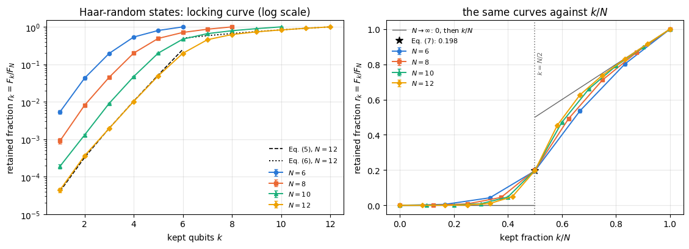
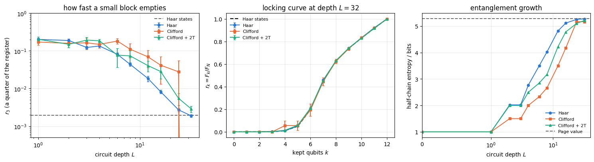
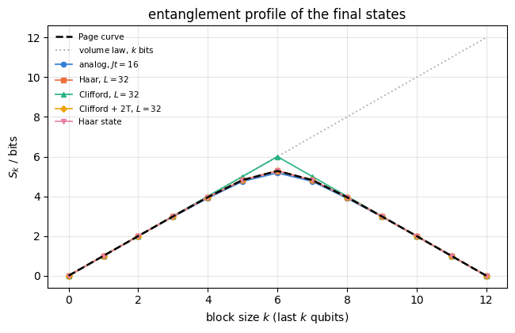
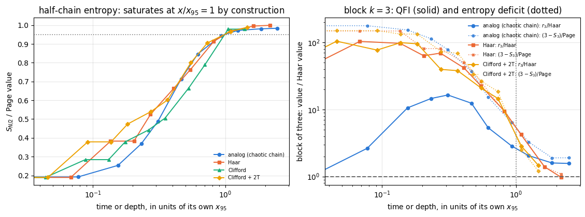

A metrological probe stores information about a parameter \(\theta\) in correlations between its particles. Notebook 34 built the best possible one: \(N\) atoms twisted into a Schrodinger-cat state whose quantum Fisher information reaches the Heisenberg value \(F_Q=N^2\). Notebook 37 asked what survives when particles are lost. This notebook asks a different question, and one that a laboratory faces whether or not it loses anything:
The probe keeps evolving after it has been prepared. Atoms interact with each other, a trap is imperfect, a circuit runs for longer than it should. Then the phase is imprinted by the usual collective rotation \(e^{-i\theta J_z}\) and part of the register is read out. How much information about \(\theta\) does a block of \(k\) qubits still give access to, and does the answer depend on how the probe was stirred?
Two different things happen. First, the total quantum Fisher information of the stirred probe for the fixed generator \(J_z\) collapses: notebook 35 showed that a Haar-random state has, on average, \(F_Q=Nd/(d+1)\approx N\) (\(d=2^N\)), so a cat with \(F_Q=N^2\) is reduced to the standard quantum limit. The unitary-invariance identity \(F_Q[U\psi,UGU^\dagger]=F_Q[\psi,G]\) protects only the rotated generator \(UGU^\dagger\), which no experiment with a collective rotation implements. Second, what is left is redistributed: it moves into correlations so global that blocks smaller than half the register retain an exponentially small share of it. This redistribution is called locking here, and it is what this notebook measures, through the fraction \(r_k=F_k/F_N\) of the remaining information that \(k\) qubits retain.
The fraction has a threshold at \(k=N/2\), but it is not a step from \(0\) to \(1\). Section 4 derives the Haar curve: below the threshold \(r_k\approx k\,4^k/(2N\,2^N)\), at it \(r_{N/2}\approx0.20\), above it \(r_k\approx k/N\), because a large block of a random state keeps the standard-quantum-limit value \(F_k\approx k\) of its own qubits. The sharp “all or nothing” threshold of the Hayden-Preskill type belongs to the other protocol, in which the phase is imprinted before the scrambler; Section 4.3 computes that curve as well, for contrast.
Notebook 35 established the endpoint of scrambling under a global Haar unitary. This notebook is about how the endpoint is reached: the dynamics of locking, two physically distinct routes to it, and the property of the state that controls it.
The three questions
The locked curve. We define the locking curve\(r_k=F_k/F_N\), the quantum Fisher information retained by \(k\) qubits of the register relative to the whole, derive its Haar average and measure it. This is the fixed point that every scrambler approaches.
How locking is reached, in time and in depth. Two physically different scramblers: an analog one, a chaotic spin chain evolving continuously under a non-integrable Hamiltonian, and a digital one, a brick-wall circuit built from discrete gate layers. For the digital case we compare three gate sets: Haar-random two-qubit gates, Clifford layers, and Clifford layers doped with \(T\) gates. Clifford circuits are classically simulable and produce states with no magic, and we measure whether that shows up in the locking curve.
What controls it. The candidate mechanism is the volume law: a block locks when its reduced state is close to maximally mixed, that is, when its entanglement entropy is close to its number of qubits. Section 7 turns this into a quantitative relation, \(F_k\approx k\ln2\,(k-S_k)\), and tests it on every scrambler. It also shows that the half-chain entropy saturates before a block of three qubits has locked, and that this “lag” disappears when the entropy of the same block is used.
What you will learn
Physics
what locking of metrological information means, why it is a statement about subsystems rather than about the state as a whole, and why it must not be confused with the collapse of the total \(F_Q\) for a fixed generator;
the locking curve of a Haar-random state, derived: exponential suppression below half the register, the standard-quantum-limit share \(F_k\approx k\) above it, and the value \(r_{N/2}\approx0.20\) at the threshold;
the difference between imprinting the phase after the scrambler (fixed generator) and before it (rotated generator), whose curve is the sharp Hayden-Preskill step;
that a chain which cannot move the probe does not lock at all, however long it is evolved;
that Clifford circuits reach the Haar locking curve on average, as a unitary design must, while every single realisation is a staircase of integer values that is zero for most small blocks: magic shows up in the fluctuations of \(F_k\), not in its mean;
that the locking of a block is controlled by the entropy deficit of that block, \(F_k\approx k\ln2\,(k-S_k)\), and that comparing it with the half-chain entropy instead produces an apparent lag.
Numerical methods
the symmetric-logarithmic-derivative quantum Fisher information of a reduced state, evaluated without ever building the reduced density matrix of the larger half, by a thin QR onto the active subspace;
the cost argument that makes the whole locking curve \(k=0,\dots,N\) cost a small multiple of its most expensive point;
a leading-order Haar average with the Weingarten-free identity \(\mathbb{E}[\rho_A\otimes\rho_A]\), and a Marchenko-Pastur integral evaluated by Gauss-Legendre quadrature;
second-order Trotter-Suzuki evolution of a disordered, non-integrable chain, and how to choose \(dt\) by measuring the error rather than by trusting the order;
brick-wall circuits over three gate sets, and sampling the single-qubit Clifford group;
averaging over disorder and circuit realisations with standard errors of the mean.
Implementation practice
lax.scan over Trotter steps with the gate list closed over, so the step compiles once;
jit over a whole circuit layer, and why the brick-wall loop must be unrolled at trace time;
a reduced-state quantity evaluated for every \(k\) in one pass, reusing one application of the generator;
vmap over disorder realisations, and the discipline of splitting keys explicitly so that a figure redrawn tomorrow is the same figure.
35 — scrambling a metrological probe: the unitary-invariance identity and the endpoint of scrambling under a global Haar unitary. Section 3 recalls everything this notebook needs from it.
What comes next.39 — QFI spreading in spin chains follows the metrological resource through quenched transverse-field Ising and XXZ chains and measures the light cone of the block-resolved quantum Fisher information after a local encoding.
Conventions. Qubit \(q\) = tensor axis \(q\), \(0\)-indexed; \(\vert0\rangle\) is the \(+1\) eigenstate of \(Z\). Collective spin operators are \(J_a=\tfrac12\sum_q\sigma^a_q\), so the standard quantum limit is \(F_Q=N\) and the Heisenberg limit \(F_Q=N^2\). The parameter is imprinted on the whole register by \(U(\theta)=e^{-i\theta J_z}\)after the scrambler, unless stated otherwise (Section 4.3 is the one exception), and only then is a subsystem selected. “Keeping \(k\) qubits” always means keeping the last\(k\) tensor axes, \(q=N-k,\dots,N-1\).
Configuration
Every notebook of this course starts with the same cell. Choose where to run (DEVICE) and the floating-point precision (PRECISION): "double" = float64/complex128 (default, recommended for physics), "single" = float32/complex64 (half the memory, faster on consumer GPUs, but watch the round-off). All code below derives its dtypes from RDTYPE/CDTYPE and its check tolerances from TOL, so nothing else needs to change.
Code
# ==============================================================================# CONFIGURATION -- adapt to your hardware, then run the notebook top to bottom# ==============================================================================DEVICE ="auto"# "auto": use a GPU if JAX finds one, else CPU | "cpu" | "gpu"PRECISION ="double"# "double": float64/complex128 | "single": float32/complex64import osif DEVICE =="cpu": os.environ["JAX_PLATFORMS"] ="cpu"# must be set BEFORE jax is importedimport osimport stringfrom functools import partialimport mathimport numpy as npimport jaximport jax.numpy as jnpfrom jax import lax# Precision is configurable: "double" = float64/complex128 (default; needed for long time evolutions and# tight validation), "single" = float32/complex64 (half the memory, faster on consumer GPUs).# In a notebook PRECISION is defined in the Configuration cell; for this module use the env var QE_PRECISION.PRECISION =globals().get("PRECISION", os.environ.get("QE_PRECISION", "double"))jax.config.update("jax_enable_x64", PRECISION =="double")RDTYPE = jnp.float64 if PRECISION =="double"else jnp.float32 # real dtypeCDTYPE = jnp.complex128 if PRECISION =="double"else jnp.complex64 # complex dtype of all states/operatorsTOL =1e-10if PRECISION =="double"else1e-4# tolerance for sanity checks (asserts)_LETTERS = string.ascii_letters # 52 einsum labels; a call needs (axes + new labels) <= 52: apply_gate on a state# N + k <= 52 (N <= 51 for k = 1), apply_gate_dm 2N + k <= 52 (N <= 25 for k = 1, 2),# apply_kraus_dm 2N + 2k + 1 <= 52 (N <= 24 for k = 1, N <= 23 for k = 2)import timeimport matplotlib.pyplot as pltif DEVICE =="gpu"and jax.default_backend() =="cpu":print("WARNING: DEVICE='gpu' requested but JAX found no GPU -- running on CPU.")print(f"JAX {jax.__version__} | backend: {jax.default_backend()} | devices: {jax.devices()}")print(f"precision: {PRECISION} -> real {RDTYPE.__name__}, complex {CDTYPE.__name__}, check tolerance TOL={TOL:g}")
JAX 0.11.0 | backend: cpu | devices: [CpuDevice(id=0)]
precision: double -> real float64, complex complex128, check tolerance TOL=1e-10
2. Engine recap and notebook helpers
From the engine we take the state constructors, apply_gate and apply_gates (the einsum that applies a small matrix to chosen axes, and a circuit as a list of them), apply_collective for the matrix-free \(\sum_qP_q\), qfi_pure, tebd_gates for the Trotter step, haar_unitary, single_qubit_cliffords, and the entropy routines; rdm, collective_dense and the dense SLD formula qfi_mixed serve only as an independent reference in the first checkpoint. Everything specific to locking is built below.
Engine recap — the simulator primitives used in this notebook (click to expand)
# ==============================================================================# ENGINE RECAP: the functions of quantum_engine.py (SmoQ.jax) used in this notebook.# Each one is derived, with its mathematics and an independent check, in notebook 08b# (Chapter 3), 'Building the quantum simulator engine'.# States are rank-N tensors of shape (2,)*N; every operator acts through ONE einsum.# ==============================================================================# ----------------------------------------------------------------------------# 1. Elementary matrices: Paulis, Clifford generators, rotations# ----------------------------------------------------------------------------I2 = jnp.eye(2, dtype=CDTYPE)X = jnp.array([[0, 1], [1, 0]], dtype=CDTYPE)Y = jnp.array([[0, -1j], [1j, 0]], dtype=CDTYPE)Z = jnp.array([[1, 0], [0, -1]], dtype=CDTYPE)H = jnp.array([[1, 1], [1, -1]], dtype=CDTYPE) / jnp.sqrt(2.0) # Hadamard: Z-basis <-> X-basisS = jnp.array([[1, 0], [0, 1j]], dtype=CDTYPE) # phase gate, S^2 = ZT = jnp.array([[1, 0], [0, jnp.exp(1j* jnp.pi /4)]], dtype=CDTYPE) # pi/8 gate, T^2 = S (non-Clifford!)CNOT = jnp.array([[1, 0, 0, 0], [0, 1, 0, 0], [0, 0, 0, 1], [0, 0, 1, 0]], dtype=CDTYPE)XX = jnp.kron(X, X)YY = jnp.kron(Y, Y)ZZ = jnp.kron(Z, Z)# ----------------------------------------------------------------------------# 2. THE core primitive: a k-qubit operator acting on a tensor through ONE einsum# ----------------------------------------------------------------------------def apply_gate(psi, U, qubits):"""Apply a k-qubit operator U to the axes `qubits` of the tensor `psi`. MATH ---- One qubit (k=1), target q: psi'[s_0,..,a,..,s_{N-1}] = sum_b U[a,b] psi[s_0,..,b,..,s_{N-1}] Two qubits (k=2), targets (q1,q2); the 4x4 matrix is reshaped to U[a1,a2,b1,b2]: psi'[.., a1, .., a2, ..] = sum_{b1,b2} U[a1,a2,b1,b2] psi[.., b1, .., b2, ..] This IS the action of (1 x .. x U x .. x 1) -- written without ever building it. EINSUM TRANSLATION (generated automatically below) ------------------ N=3, q=1 : "db,abc->adc" d = new (output) index of qubit 1 N=4, q=(1,3) : "efbd,abcd->aecf" e,f = new indices of qubits 1 and 3 Recipe: label the axes of psi with letters a,b,c,...; give every target qubit a NEW letter (the next unused ones); U carries (new letters)+(old letters of the targets); the output is psi's labels with the target letters replaced by the new ones. IMPLEMENTATION NOTES -------------------- * reshape of U: (2^k,2^k) -> (2,)*2k. Row index = (a1..ak), column = (b1..bk), and the FIRST qubit in `qubits` is the most significant bit of the small matrix, i.e. it corresponds to the LEFT factor of kron(A,B). * `qubits` may be any distinct axes in any order: non-neighbouring gates cost the same. * U need not be unitary: projectors, Kraus operators and Hamiltonian terms reuse this. * psi may be ANY tensor with those axes of size 2: a state (rank N), a density tensor (rank 2N: ket axes 0..N-1, bra axes N..2N-1), ... COST O(2^k * 2^N) operations, O(2^N) memory (dense matrix: O(4^N) both). JAX `qubits` must be static Python ints (they define the einsum string); psi and U are traced, so the function can sit inside jit / grad / vmap / scan. """ qubits =tuple(int(q) for q in qubits) k, n =len(qubits), psi.ndim U = jnp.asarray(U, dtype=psi.dtype).reshape((2,) * (2* k)) # matrix -> rank-2k tensor inp =list(_LETTERS[:n]) # labels of psi's axes new = _LETTERS[n:n + k] # fresh labels for the outputs out = inp.copy()for a, q inzip(new, qubits): out[q] = a # target axes get the new labels sub =f"{''.join(new)}{''.join(inp[q] for q in qubits)},{''.join(inp)}->{''.join(out)}"return jnp.einsum(sub, U, psi)# ----------------------------------------------------------------------------# 3. State preparation# ----------------------------------------------------------------------------_KETS = {"0": [1, 0], "1": [0, 1], "+": [1, 1], "-": [1, -1], "r": [1, 1j], "l": [1, -1j]}def product_state(spec):"""Product state from a string, one character per qubit: product_state('01+-') = |0>|1>|+>|->. ('r','l' = the +1/-1 eigenstates of Y.) MATH psi[s_0,...,s_{N-1}] = v0[s_0] v1[s_1] ... v_{N-1}[s_{N-1}] EINSUM an outer product = einsum with NO summed index: "a,b,c->abc". A product state needs only 2N numbers; entanglement is what makes all 2^N necessary. """ vecs = [jnp.array(_KETS[c], dtype=CDTYPE) / jnp.linalg.norm(jnp.array(_KETS[c], dtype=CDTYPE))for c in spec] n =len(vecs) sub =",".join(_LETTERS[i] for i inrange(n)) +"->"+ _LETTERS[:n]return jnp.einsum(sub, *vecs)def ghz_state(N):"""GHZ state (|0...0> + |1...1>)/sqrt(2): two non-zero entries of the rank-N tensor.""" psi = jnp.zeros((2,) * N, dtype=CDTYPE)return psi.at[(0,) * N].set(1/ jnp.sqrt(2.0)).at[(1,) * N].set(1/ jnp.sqrt(2.0))def haar_state(key, N):"""Haar-random pure state: a complex Gaussian vector, normalised. (The Gaussian measure is unitarily invariant, so the direction is uniformly distributed.) `key` is an explicit JAX PRNG key -- same key, same state: reproducible science.""" k1, k2 = jax.random.split(key) v = jax.random.normal(k1, (2,) * N) +1j* jax.random.normal(k2, (2,) * N)return (v / jnp.linalg.norm(v)).astype(CDTYPE)# ----------------------------------------------------------------------------# 4. Reduced density matrices & observables (matrix-free)# ----------------------------------------------------------------------------def rdm(psi, keep):"""Reduced density matrix of the qubits `keep` from a PURE state: rho_A = Tr_B |psi><psi|. MATH rho_A[a, a'] = sum_{b} psi[a, b] psi^*[a', b] (a: indices of A, b: of the rest B) EINSUM TRANSLATION N=3, keep=(0,): "abc,Abc->aA" with operands psi, psi^* * letters of B (b,c) appear in BOTH operands and not in the output -> summed = traced out * the kept axis gets a different letter in the second operand -> stays open (a and A) The full |psi><psi| (4^N numbers) is never formed; cost O(2^N 2^|A|). Returns a (2^|A|, 2^|A|) matrix with row/column order following `keep`. """ keep =tuple(int(q) for q in keep) n, k = psi.ndim, len(keep) a =list(_LETTERS[:n]) b = a.copy()for new, q inzip(_LETTERS[n:n + k], keep): b[q] = new sub =f"{''.join(a)},{''.join(b)}->{''.join(a[q] for q in keep)}{''.join(b[q] for q in keep)}"return jnp.einsum(sub, psi, jnp.conj(psi)).reshape(2** k, 2** k)# ----------------------------------------------------------------------------# 5. State characteristics: entropies, fidelity, negativity# ----------------------------------------------------------------------------def schmidt_values(psi, subsystem):"""Schmidt coefficients of the bipartition A|B with A = `subsystem`. MATH Group the tensor axes into a matrix M[(a),(b)] = psi[a,b] of shape (2^|A|, 2^|B|). Its SVD M = U diag(lambda) V^dag IS the Schmidt decomposition |psi> = sum_k lambda_k |u_k>_A |v_k>_B , rho_A has eigenvalues lambda_k^2. IMPLEMENTATION transpose (A axes first) -> reshape -> svd. No density matrix needed. """ A =tuple(int(q) for q in subsystem) B =tuple(q for q inrange(psi.ndim) if q notin A) M = jnp.transpose(psi, A + B).reshape(2**len(A), -1)return jnp.linalg.svd(M, compute_uv=False)def entanglement_entropy(psi, subsystem, base=2.0):"""Entanglement entropy S_A = -sum_k p_k log p_k with p_k = lambda_k^2 (squared Schmidt values). Product state: 0. Bell/GHZ across any cut: 1 bit. Random state: ~ |A| - 1/(2 ln2) 2^{|A|-|B|} (Page).""" p = jnp.clip(schmidt_values(psi, subsystem) **2, 1e-16, None)return-jnp.sum(p * jnp.log(p)) / jnp.log(base)# ----------------------------------------------------------------------------# 9. Time evolution: TEBD / Trotter-Suzuki, Chebyshev, Krylov, exact# ----------------------------------------------------------------------------def _expm_herm(h, tau):"""exp(-i tau h) for a SMALL Hermitian matrix: h = V w V^dag => V exp(-i tau w) V^dag.""" w, v = jnp.linalg.eigh(jnp.asarray(h, dtype=CDTYPE))return (v * jnp.exp(-1j* tau * w)) @ v.conj().Tdef tebd_gates(terms, dt, order=2):"""Gate sequence of ONE Trotter-Suzuki (TEBD) step for H = sum_k h_k. MATH exp(-i H dt) cannot be split exactly because [h_k, h_l] != 0, but (BCH formula): order 1: prod_k e^{-i h_k dt} local error O(dt^2), global O(dt) order 2: prod_k e^{-i h_k dt/2} * prod_k(reversed) e^{-i h_k dt/2} local O(dt^3), global O(dt^2) order 4: S2(s dt)^2 S2((1-4s) dt) S2(s dt)^2, s = 1/(4 - 4^{1/3}) (Suzuki) global O(dt^4) Each factor is a 2x2 or 4x4 unitary -> applied by einsum; this is TEBD on a full state vector. Every order is exactly unitary: the norm is conserved to machine precision; the ERROR is in the phase /direction of the state, and it is controlled by dt. """if order ==1:return [(q, _expm_herm(h, dt)) for q, h in terms]if order ==2: half = [(q, _expm_herm(h, dt /2)) for q, h in terms]return half + half[::-1]if order ==4: s =1.0/ (4.0-4.0** (1.0/3.0)) seq = []for w in (s, s, 1-4* s, s, s): seq += tebd_gates(terms, w * dt, order=2)return seqraiseValueError("order must be 1, 2 or 4")def apply_gates(psi, gates):"""Apply a list [(qubits, U), ...] in order -- a quantum circuit is a Python loop over einsums. Under `jax.jit` the loop is unrolled at trace time and XLA fuses it into one program."""for qubits, U in gates: psi = apply_gate(psi, U, qubits)return psi# ----------------------------------------------------------------------------# 11. Collective spins, spin squeezing, quantum Fisher information# ----------------------------------------------------------------------------def apply_collective(psi, P, qubits=None):"""(sum_q P_q)|psi> for a single-qubit operator P -- N einsums, O(N 2^N). Note: NO factor 1/2 here; the collective spin is J_a = (1/2) sum_q sigma^a_q.""" qubits =range(psi.ndim) if qubits isNoneelse qubits out = jnp.zeros_like(psi)for q in qubits: out = out + apply_gate(psi, P, [q])return outdef qfi_pure(psi, P=Z, qubits=None):"""Quantum Fisher information of a pure state for the phase imprinted by exp(-i theta J), J = (1/2) sum_q P_q: F_Q = 4 Var(J) = <G^2> - <G>^2 with G = sum_q P_q = 2J. Cramer-Rao: Delta theta >= 1/sqrt(M F_Q). Product states F_Q <= N (standard quantum limit); GHZ: F_Q = N^2 (Heisenberg limit). Matrix-free: |phi> = G|psi>, <G^2> = <phi|phi>, <G> = <psi|phi>.""" phi = apply_collective(psi, P, qubits)return jnp.real(jnp.vdot(phi, phi)) - jnp.real(jnp.vdot(psi, phi)) **2def qfi_mixed(rho_mat, G_mat, tol=1e-12):"""QFI of a MIXED state (symmetric-logarithmic-derivative formula), rho = sum_m l_m |m><m|: F_Q = 2 sum_{m,n : l_m+l_n>0} (l_m - l_n)^2/(l_m + l_n) |<m|G|n>|^2 (G = generator, e.g. J). Reduces to 4 Var(G) for pure states. Dense eigendecomposition -> use on small / reduced states.""" lam, v = jnp.linalg.eigh(rho_mat) G = v.conj().T @ G_mat @ v num = (lam[:, None] - lam[None, :]) **2 den = lam[:, None] + lam[None, :]return2* jnp.sum(jnp.where(den > tol, num / jnp.where(den > tol, den, 1.0), 0.0) * jnp.abs(G) **2)def collective_dense(P, n):"""Dense J = (1/2) sum_q P_q on n qubits (input of `qfi_mixed`), built from the matrix-free action on the basis vectors (vmap), exactly like `dense_hamiltonian`.""" eye = jnp.eye(2** n, dtype=CDTYPE).reshape((2** n,) + (2,) * n)return0.5* jax.vmap(lambda e: apply_collective(e, P).reshape(-1))(eye).T# ----------------------------------------------------------------------------# 12. Random unitaries, Clifford group, brick-wall circuits# ----------------------------------------------------------------------------def haar_unitary(key, d):"""Haar-random d x d unitary (Mezzadri's recipe): QR-decompose a complex Ginibre matrix and fix the phases of R's diagonal -- without the phase fix the distribution is NOT Haar.""" k1, k2 = jax.random.split(key) G = (jax.random.normal(k1, (d, d)) +1j* jax.random.normal(k2, (d, d))) / jnp.sqrt(2.0) Q, R = jnp.linalg.qr(G) ph = jnp.diagonal(R) / jnp.abs(jnp.diagonal(R))return Q * ph[None, :]def single_qubit_cliffords():"""The 24 single-qubit Clifford gates (modulo global phase), generated by closing {H, S} under multiplication (breadth-first search; a canonical phase makes matrices comparable).""" found = [np.eye(2, dtype=complex)] gens = [np.asarray(H), np.asarray(S)]def canon(U): i = np.flatnonzero(np.abs(U.reshape(-1)) >1e-9)[0]return U * np.exp(-1j* np.angle(U.reshape(-1)[i])) frontier = [found[0]]while frontier: nxt = []for U in frontier:for g in gens: V = canon(g @ U)ifnotany(np.allclose(V, W) for W in found): found.append(V) nxt.append(V) frontier = nxtreturn jnp.asarray(np.stack(found), dtype=CDTYPE)
Code
# ==============================================================================# PLOT STYLE + small helpers used throughout this notebook# ==============================================================================PALETTE = ["#2a78d6", "#eb6834", "#1baf7a", "#eda100", "#e87ba4", "#4a3aa7"] # colour-blind-friendly, fixed orderMARKERS = ["o", "s", "^", "D", "v", "P"]plt.rcParams.update({"axes.prop_cycle": plt.cycler(color=PALETTE), "axes.grid": True,"grid.alpha": 0.3, "font.size": 10, "legend.frameon": False})from functools import lru_cache # used to cache one compiled program per subsystem sizedef max_abs(a):"""Largest absolute entry of an array, as a Python float."""returnfloat(jnp.max(jnp.abs(jnp.asarray(a))))def timed(f, *args, budget=0.3, min_reps=3, max_reps=200):"""Return (result, compile_time, best_run_time); JAX is asynchronous, so every value is blocked on.""" t0 = time.time() out = jax.block_until_ready(f(*args)) t_compile = time.time() - t0 best, n, t_start = np.inf, 0, time.time()while n < min_reps or (time.time() - t_start < budget and n < max_reps): t0 = time.time() out = jax.block_until_ready(f(*args)) best =min(best, time.time() - t0) n +=1return out, t_compile, bestdef half_entropy(psi):"""Entanglement entropy in BITS of the first half of the register against the second. The engine's `entanglement_entropy` already uses base 2, so no conversion is needed here. """returnfloat(entanglement_entropy(psi, range(psi.ndim //2)))def page_entropy_bits(n_a, n_b):"""Page's average entropy of a random pure state, in bits, for a d_A x d_B bipartition. MATH <S> = sum_{j=d_B+1}^{d_A d_B} 1/j - (d_A - 1)/(2 d_B) (natural log), d_A <= d_B. """ d_a, d_b =2**min(n_a, n_b), 2**max(n_a, n_b) s =float(np.sum(1.0/ np.arange(d_b +1, d_a * d_b +1)) - (d_a -1) / (2.0* d_b))return s / np.log(2.0)
3. The locking curve
3.1 The quantity
The protocol is the one of notebook 30, stopped one step early. A probe \(\vert\psi\rangle\) of \(N\) qubits is prepared; the parameter is imprinted on all of them,
and then only \(k\) qubits are kept, the other \(N-k\) being traced out — not lost, merely not measured. The state available to the experimenter is the reduced density matrix
the fraction of the total phase information that \(k\) qubits retain. It starts at \(r_0=0\) (no qubits, no information) and ends at \(r_N=1\) by construction. Everything interesting is in the shape in between.
Physics insight.\(r_k\) is not a measure of entanglement, and it is not a property of \(\vert\psi\rangle\) alone: it depends on the generator. Section 4.3 evaluates the same Haar-random states with the fixed generator \(J_z\) and with a scrambled one, and the two locking curves differ qualitatively. What \(r_k\) measures is the accessibility of one specific piece of physical information from one specific part of the register.
3.2 Computing it without building the large reduced state
Write the state tensor as a matrix whose rows are labelled by the \(k\) kept axes and whose columns are labelled by the \(N-k\) traced axes, \(\Psi\in\mathbb{C}^{2^{k}\times2^{N-k}}\). Tracing out the column index is then a matrix product, \(\rho_k=\Psi\Psi^\dagger\). Differentiating \(\vert\psi_\theta\rangle=e^{-i\theta J_z}\vert\psi\rangle\) at \(\theta=0\) gives \(\partial_\theta\vert\psi_\theta\rangle=-iJ_z\vert\psi\rangle\), so with \(\Phi\) the matrix reshaped the same way from \(J_z\vert\psi\rangle\),
Eq. (3) is worth one line of algebra: \(\rho_k(\theta)\) is built from \(e^{-i\theta J_z}\vert\psi\rangle\), whose \(\theta\)-derivative at the origin is \(-iJ_z\vert\psi\rangle\); the product rule on \(\Psi\Psi^\dagger\) gives \((-i\Phi)\Psi^\dagger+\Psi(-i\Phi)^\dagger=-i(T-T^\dagger)\).
One more line shows which part of the generator matters. Split \(J_z=J_A+J_B\) into the collective spins of the kept block \(A\) and the traced block \(B\). The term \(J_B\) contributes \(-i\,\mathrm{Tr}_B[J_B,\vert\psi\rangle\langle\psi\vert]\), a partial trace of a commutator with an operator acting on \(B\) only, which vanishes by cyclicity of the trace over \(B\). Hence
the quantum Fisher information of the reduced state for the collective spin of the kept qubits alone. The traced qubits influence \(F_k\) only through how mixed they leave \(\rho_k\). The checkpoint below uses Eq. (3a) as an independent test of the matrix-free route.
Two facts make Eq. (1) cheap. First, \(\rho_k\) has rank at most \(2^{\min(k,N-k)}\), so for \(k>N/2\) it is a large matrix with a small support. Second, \(\Psi\) and \(\Phi\) have only \(2^{N-k}\) columns each: a thin QR factorisation of the \(2^{k}\times2^{N-k+1}\) matrix \([\Psi\;\Phi]\) produces an isometry \(Q\) onto a subspace of dimension at most \(2^{N-k+1}\) that contains the whole column space of \(\Psi\)and of \(\Phi\), hence the whole support of \(\rho_k\) and of \(\partial_\theta\rho_k\). Replacing \(\Psi\to Q^\dagger\Psi\) and \(\Phi\to Q^\dagger\Phi\) changes no non-zero eigenvalue and no matrix element that Eq. (1) uses. The cost of the point \(k\) therefore scales as \(8^{\min(k,\,N-k)}\), and the whole curve costs no more than a small multiple of its midpoint.
Numerical practice. The sum in Eq. (1) runs only over pairs with \(\lambda_m+\lambda_n>0\). Numerically the zero eigenvalues of a rank-deficient \(\rho_k\) come out as \(\pm10^{-17}\), and dividing by them produces enormous garbage. The guard is a tolerance, and it must be applied inside the expression with jnp.where on both branches — the standard JAX idiom for “compute this only where it is defined”, because a where that still evaluates the bad branch will produce a nan that propagates through grad.
Code
# ==============================================================================# STEP 1: the SLD quantum Fisher information of a reduced state, QR-compressed# ==============================================================================def qfi_from_derivative(rho, drho, tol=1e-12):"""SLD quantum Fisher information from a state and its derivative -- Eq. (1). MATH F_Q = 2 sum_{m,n} |<m|drho|n>|^2 / (lam_m + lam_n) over lam_m + lam_n > tol, where rho = sum_m lam_m |m><m|. IMPL the double `jnp.where` guards the division: the second one replaces the denominator by 1 wherever the pair is excluded, so no inf/nan is ever formed, not even in an unused branch. COST one Hermitian eigendecomposition of rho, O(dim^3). """ lam, v = jnp.linalg.eigh(rho) D = v.conj().T @ drho @ v den = lam[:, None] + lam[None, :] ok = den > tolreturn2* jnp.sum(jnp.where(ok, jnp.abs(D) **2/ jnp.where(ok, den, 1.0), 0.0))def subsystem_qfi(psi, phi, k, tol=1e-12):"""QFI retained by the LAST k qubits after the phase was imprinted on all N -- Eqs. (1) and (3). ARGS psi : state tensor (2,)*N; phi : the tensor J|psi> for the generator J used to imprint; k : number of kept qubits (the last k axes). MATH Psi = psi reshaped to (2^{N-k}, 2^k), rho_k = Psi^dag Psi, d rho_k / d theta = -i (T - T^dag) with T = Phi^dag Psi. IMPL when 2^k > 2^{N-k} a thin QR of [Psi^dag | Phi^dag] gives an isometry onto the (at most 2^{N-k+1})-dimensional active subspace; the non-zero spectrum and every matrix element entering Eq. (1) are unchanged by the projection. COST O(8^min(k, N-k)). phi is passed in so that ONE application of J serves the whole curve. """if k ==0:return0.0 Psi = psi.reshape(-1, 2** k).T # rows = kept block, columns = traced block Phi = phi.reshape(-1, 2** k).Tif Psi.shape[0] > Psi.shape[1]: Q, _ = jnp.linalg.qr(jnp.concatenate([Psi, Phi], axis=1)) Psi, Phi = Q.conj().T @ Psi, Q.conj().T @ Phi Tm = Phi @ Psi.conj().Treturnfloat(qfi_from_derivative(Psi @ Psi.conj().T, -1j* (Tm - Tm.conj().T), tol))@lru_cache(maxsize=None)def _qfi_at_k(k, tol=1e-12):"""A jitted `subsystem_qfi` specialised to one k. JAX k fixes every array SHAPE in the routine, so it must be a compile-time constant, not an argument. Caching one compiled program per k means the whole locking curve is compiled N times in total and then reused for every state the notebook ever evaluates -- a few hundred calls. Without this the QR and the eigendecomposition are dispatched op by op. """return jax.jit(lambda psi, phi: _subsystem_qfi_traced(psi, phi, k, tol))def _subsystem_qfi_traced(psi, phi, k, tol):"""The body of `subsystem_qfi`, returning a traced array instead of a Python float.""" Psi = psi.reshape(-1, 2** k).T Phi = phi.reshape(-1, 2** k).Tif Psi.shape[0] > Psi.shape[1]: Q, _ = jnp.linalg.qr(jnp.concatenate([Psi, Phi], axis=1)) Psi, Phi = Q.conj().T @ Psi, Q.conj().T @ Phi Tm = Phi @ Psi.conj().Treturn qfi_from_derivative(Psi @ Psi.conj().T, -1j* (Tm - Tm.conj().T), tol)def locking_curve(psi, P=None):"""The whole profile F_k, k = 0..N, for the generator J = (1/2) sum_q P_q (default P = Z). One application of the collective generator is reused for every k -- that, and the per-k compilation above, are the two reasons the curve is affordable: the N+1 points then cost one eigendecomposition each, the largest of dimension 2^ceil(N/2). """ P = Z if P isNoneelse P phi =0.5* apply_collective(psi, P)return np.array([0.0] + [float(_qfi_at_k(k)(psi, phi)) for k inrange(1, psi.ndim +1)])
Before using Eq. (1) on anything interesting we check it against the two cases whose answer is known in closed form. At \(k=N\) nothing is traced out, the state is pure, and the symmetric-logarithmic-derivative formula must collapse to the variance formula \(F_N=4\,\mathrm{Var}(J_z)\) of notebook 29. Two states pin the scale: the coherent spin state \(\vert+\rangle^{\otimes N}\), for which \(F_N=N\) (the standard quantum limit), and the GHZ state, for which \(F_N=N^2\) (the Heisenberg limit). For \(k<N\) two further checks follow: the QR compression must change nothing, and Eq. (3a) must agree with a completely independent dense computation (the engine’s rdm, a dense \(J_A\) and the engine’s qfi_mixed). A generator placed on the wrong qubits must fail the second check.
Code
# ==============================================================================# CHECKPOINT: k = N reproduces 4 Var(J_z); the two limits come out at N and N^2# ==============================================================================N =12# main system size of this notebookpsi_plus = product_state("+"* N)psi_ghz = ghz_state(N)for name, psi, expected in (("coherent |+>^N", psi_plus, float(N)), ("GHZ", psi_ghz, float(N **2))): phi =0.5* apply_collective(psi, Z) f_sld = subsystem_qfi(psi, phi, N) f_var =float(qfi_pure(psi, Z)) # engine: <G^2> - <G>^2 with G = 2 J_z, i.e. 4 Var(J_z)print(f"{name:16s} F_N (SLD) = {f_sld:10.6f} 4 Var(J_z) = {f_var:10.6f} "f"expected = {expected:8.2f} err = {abs(f_sld - f_var):.2e}")assertabs(f_sld - f_var) <1e6* TOLassertabs(f_sld - expected) <1e6* TOL# --- CHECKPOINT: the QR compression is exact, not an approximation --------------------key = jax.random.PRNGKey(20260920)key, sk = jax.random.split(key)psi_rand = haar_state(sk, N)phi_rand =0.5* apply_collective(psi_rand, Z)# The uncompressed reference needs a dense 2^k x 2^k eigendecomposition -- 4096 x 4096 at k = N = 12, over a# minute on one CPU core -- so this check uses a 10-qubit state, where the largest one is 1024 x 1024.N_CHK =10key, sk = jax.random.split(key)psi_chk = haar_state(sk, N_CHK)phi_chk =0.5* apply_collective(psi_chk, Z)err_compress =0.0for k inrange(1, N_CHK +1): Psi = psi_chk.reshape(-1, 2** k).T Phi = phi_chk.reshape(-1, 2** k).T Tm = Phi @ Psi.conj().T # uncompressed: full 2^k x 2^k matrices f_full =float(qfi_from_derivative(Psi @ Psi.conj().T, -1j* (Tm - Tm.conj().T))) err_compress =max(err_compress, abs(f_full - subsystem_qfi(psi_chk, phi_chk, k)))print(f"\ncompressed vs uncompressed, N = {N_CHK}, all k = 1..{N_CHK}: max err = {err_compress:.2e}")assert err_compress <1e6* TOL# --- CHECKPOINT: Eq. (3a), independently -- dense rho_A from the engine, dense J_A, dense SLD formula ----# The two routes share nothing but the state: `rdm` + `collective_dense` + `qfi_mixed` versus Psi/Phi + Eq. (3).# Wrong control: the collective spin of the FIRST k qubits instead of the kept (last) ones must disagree.err_dense, gap_wrong =0.0, np.inffor k inrange(1, 7): rho_A = rdm(psi_rand, range(N - k, N)) f_dense =float(qfi_mixed(rho_A, collective_dense(Z, k))) f_mf = subsystem_qfi(psi_rand, phi_rand, k) phi_wrong =0.5* apply_collective(psi_rand, Z, qubits=range(k)) gap_wrong =min(gap_wrong, abs(subsystem_qfi(psi_rand, phi_wrong, k) - f_dense) / f_dense) err_dense =max(err_dense, abs(f_dense - f_mf))print(f"Eq. (3a): dense F_Q[rho_A, J_A] vs matrix-free F_k, k = 1..6: max err = {err_dense:.2e}")print(f"wrong control (generator on the first k qubits): smallest relative deviation = {gap_wrong:.2f}")assert err_dense <1e6* TOLassert gap_wrong >0.1
compressed vs uncompressed, N = 10, all k = 1..10: max err = 8.88e-15
Eq. (3a): dense F_Q[rho_A, J_A] vs matrix-free F_k, k = 1..6: max err = 8.88e-16
wrong control (generator on the first k qubits): smallest relative deviation = 1.00
4. The locked curve: what a Haar-random state retains
Every scrambler in this notebook is trying, in its own way, to turn the probe into a generic state. So the first thing to measure is the target: the locking curve of a Haar-random state.
The expected shape follows from one fact established in notebook 10 and used again in notebook 35. For a Haar-random \(\vert\psi\rangle\) and \(k<N/2\), the reduced state of \(k\) qubits is exponentially close to maximally mixed,
and the maximally mixed state is a fixed point of every unitary: \(e^{-i\theta J_z}\,\mathbb{1}\,e^{i\theta J_z}=\mathbb{1}\). A state that does not move when the parameter changes carries no information about it, so \(F_k\to0\). The suppression is governed by \(2^{k}/2^{N-k}=4^{k}/2^{N}\), which crosses unity at \(k=N/2\). The next subsection turns this into formulas for both sides of the threshold.
4.1 The closed-form Haar locking curve
Write \(d_A=2^k\), \(d_B=2^{N-k}\), \(d=d_Ad_B\) and \(\rho_k=\mathbb{1}/d_A+\delta\).
Small blocks, \(k<N/2\). All eigenvalues of \(\rho_k\) are close to \(1/d_A\), so in Eq. (1) we may replace \(\lambda_m+\lambda_n\) by \(2/d_A\). With Eq. (3a), \(\langle m\vert\partial_\theta\rho_k\vert n\rangle=-i(\lambda_n-\lambda_m)\langle m\vert J_A\vert n\rangle\), and
The bracket is quadratic in the state, so its Haar average needs only the second moment. For a Haar-random state, \(\mathbb{E}\left[\vert\psi\rangle\langle\psi\vert^{\otimes2}\right]=(\mathbb{1}+\mathcal{S})/(d(d+1))\) with \(\mathcal{S}\) the swap of the two copies; tracing out both copies of \(B\) gives
and with \(\mathrm{Tr}[(X\rho\otimes Y\rho)\mathcal{S}_A]=\mathrm{Tr}(X\rho Y\rho)\) one finds \(\mathbb{E}\,\mathrm{Tr}(\rho_kX\rho_kY)=\left[d_B^2\,\mathrm{Tr}(XY)+d_B\,\mathrm{Tr}X\,\mathrm{Tr}Y\right]/(d(d+1))\). Taking \((X,Y)=(\mathbb{1},J_A^2)\) and \((J_A,J_A)\), and using \(\mathrm{Tr}J_A=0\) and \(\mathrm{Tr}J_A^2=kd_A/4\),
where the last step divides by the Haar average \(F_N=Nd/(d+1)\approx N\) of notebook 35. The ratio of consecutive points is \(r_{k+1}/r_k=4(k+1)/k\): \(8\), \(6\), \(5.3\), \(5\), … rather than a constant factor of four.
Large blocks, \(k>N/2\). Now \(B\) is small and \(\rho_k\) has rank \(d_B<d_A\). Convexity of the quantum Fisher information (notebook 30) applied to the eigen-decomposition of \(\rho_k\), together with the fact that the average of the variances of the components is at most the variance of the mixture, gives \(F_k\le4\,\mathrm{Var}_{\rho_k}(J_A)=4\,\mathrm{Var}_{\psi}(J_A)\), whose Haar average is \(kd/(d+1)\approx k\) by the same calculation as \(F_N\). The numbers below show that the bound is nearly saturated a few qubits past the threshold, so
A large block keeps the standard-quantum-limit value of its own qubits, and no more: the total \(F_N\approx N\) of a random state is itself only the standard quantum limit.
The threshold, \(k=N/2\). Now \(d_A=d_B\) and the eigenvalues \(x=d_A\lambda\) are spread over \([0,4]\) by the Marchenko-Pastur law with density \(p(x)=\sqrt{(4-x)/x}/(2\pi)\) (notebook 37, Section 12; quoted there without proof). Treating the matrix elements of \(J_A\) in the eigenbasis of \(\rho_k\) as random, \(\vert\langle m\vert J_A\vert n\rangle\vert^2\approx\mathrm{Tr}J_A^2/d_A^2\), Eq. (1) becomes
independent of \(N\); the code evaluates the double integral by Gauss-Legendre quadrature after the substitution \(x=4\sin^2u\), which turns \(p(x)\,dx\) into \((4/\pi)\cos^2u\,du\).
In the limit \(N\to\infty\) at fixed fraction \(k/N\) the curve therefore tends to \(0\) below one half and to \(k/N\) above it: a jump of height \(1/2\) at the threshold, not a step to \(1\).
4.2 Measurement
For four system sizes we draw Haar-random states, evaluate the locking curve of each, and average with the standard error of the mean. The raw \(F_k\) are kept as well, because Eq. (6) is a statement about \(F_k\) itself.
Code
# ==============================================================================# STEP 2: the Haar-random reference curve for several N# ==============================================================================N_HAAR = [6, 8, 10, 12] # system sizes for the reference curveR_HAAR =48# Haar realisations per sizehaar_mean, haar_sem, haar_F = {}, {}, {}t0 = time.time()for n in N_HAAR: rows = []for r inrange(R_HAAR): key, sk = jax.random.split(key) rows.append(locking_curve(haar_state(sk, n))) rows = np.array(rows) haar_F[n] = rows # raw F_k, one row per state ratios = rows / rows[:, -1:] # normalise EACH realisation before averaging haar_mean[n] = ratios.mean(0) haar_sem[n] = ratios.std(0, ddof=1) / np.sqrt(R_HAAR)print(f"Haar reference curves for N = {N_HAAR}, {R_HAAR} realisations each, in {time.time() - t0:.1f} s\n")print(f" r_k = F_k / F_N (mean over {R_HAAR} Haar-random states, standard error in brackets)")print(f" {'k':>3} | "+" ".join(f"{'N='+str(n):>17s}"for n in N_HAAR))for k inrange(max(N_HAAR) +1): row =f" {k:>3} | "for n in N_HAAR: row +=f"{haar_mean[n][k]:9.5f} ({haar_sem[n][k]:5.0e}) "if k <= n else" "*18print(row)
The curves are not symmetric: at the midpoint \(k=N/2\) the retained fraction is about \(0.2\) for every \(N\), not \(0.5\). Half of the register is worth a fifth of the information. Below the midpoint the values fall faster than a factor of four per qubit removed, and above it they approach the straight line \(k/N\). The next cell compares the table with Eqs. (5)–(7), and with two wrong laws that a quick reading of the table could suggest.
Code
# ==============================================================================# CHECKPOINT: Eqs. (5), (6), (7) against the measured Haar curves# ==============================================================================def mp_midpoint(n_nodes=200):"""Eq. (7): (1/4) E[(x-y)^2/(x+y)] for x, y independent Marchenko-Pastur(1) variables. MATH x = 4 sin^2 u maps p(x) dx = sqrt((4-x)/x)/(2 pi) dx onto (4/pi) cos^2 u du, u in [0, pi/2]; the integrand is then smooth and Gauss-Legendre converges fast. """ g, w = np.polynomial.legendre.leggauss(n_nodes) u = (g +1) * np.pi /4 w = w * np.pi /4* (4/ np.pi) * np.cos(u) **2# quadrature weights times the density x =4* np.sin(u) **2 num = (x[:, None] - x[None, :]) **2/ (x[:, None] + x[None, :])return0.25*float(w @ num @ w), float(w.sum())R_MID, w_norm = mp_midpoint()print(f"Eq. (7): r_(N/2) -> {R_MID:.4f} (quadrature weights sum to {w_norm:.12f})\n")assertabs(w_norm -1) <1e-10print(f" {'N':>3}{'r_(N/2)':>9}{'sem':>7} | {'r_(N/2-2) / Eq.(5)':>19} | {'r_(N/2-1)/r_(N/2-3)':>20}{'Eq.(5)':>7} "f"{'x16':>5} | {'max_k |F_k/k - 1|, k>=N/2+3':>28}")for n in N_HAAR: h = n //2 law5 =lambda k: k *4.0** k / (2* n *2.0** n) z_mid = (haar_mean[n][h] - R_MID) / haar_sem[n][h] line =f" {n:>3}{haar_mean[n][h]:9.4f}{haar_sem[n][h]:7.4f} | "if h -3>=1: ratio5 = haar_mean[n][h -2] / law5(h -2) slope = haar_mean[n][h -1] / haar_mean[n][h -3] # Eq. (5): 16 (h-1)/(h-3); constant x4/qubit: 16 line +=f"{ratio5:19.3f} | {slope:20.1f}{16* (h -1) / (h -3):7.1f}{16:5d} | "else: line +=f"{'':19s} | {'':20s}{'':7s}{'':5s} | " big = [k for k inrange(h +3, n)] dev =max(abs(haar_F[n][:, k].mean() / k -1) for k in big) if big else np.nanprint(line +f"{dev:28.3f}")assertabs(z_mid) <4# Eq. (7)if n >=8:assertabs(haar_mean[n][h] -0.25) >8* haar_sem[n][h] # wrong control: Eq. (5) at k = N/2if n >=10:assertabs(ratio5 -1) <0.15# Eq. (5), two qubits below the thresholdassertabs(np.log(slope / (16* (h -1) / (h -3)))) <abs(np.log(slope /16)) # k 4^k beats 4^kassert dev <0.04# Eq. (6)assert haar_mean[n][n -1] <0.95# wrong control: a step to r = 1print("\nEq. (7) holds at every N, Eq. (5) two qubits below the threshold, Eq. (6) three qubits above it.")# Common pitfall, measured: mean of ratios versus ratio of meansn = N_HAAR[-1]ratio_of_means = haar_F[n].mean(0) / haar_F[n][:, -1].mean()diff_pitfall = np.max(np.abs(haar_mean[n] - ratio_of_means)[1:-1] / haar_sem[n][1:-1])print(f"N = {n}: |mean of ratios - ratio of means| <= {diff_pitfall:.2f} standard errors over k = 1..{n -1}")
Eq. (7): r_(N/2) -> 0.1977 (quadrature weights sum to 1.000000000000)
N r_(N/2) sem | r_(N/2-2) / Eq.(5) | r_(N/2-1)/r_(N/2-3) Eq.(5) x16 | max_k |F_k/k - 1|, k>=N/2+3
6 0.1956 0.0066 | | | nan
8 0.1996 0.0030 | 1.034 | 49.7 48.0 16 | 0.016
10 0.1997 0.0019 | 0.965 | 36.4 32.0 16 | 0.017
12 0.1969 0.0010 | 0.983 | 25.5 26.7 16 | 0.018
Eq. (7) holds at every N, Eq. (5) two qubits below the threshold, Eq. (6) three qubits above it.
N = 12: |mean of ratios - ratio of means| <= 0.11 standard errors over k = 1..11
Code
# ==============================================================================# FIGURE: the Haar locking curve, absolute and rescaled# ==============================================================================fig, axes = plt.subplots(1, 2, figsize=(11.4, 4.2))for j, n inenumerate(N_HAAR): ks = np.arange(n +1) axes[0].errorbar(ks[1:], haar_mean[n][1:], yerr=haar_sem[n][1:], fmt=MARKERS[j] +"-", color=PALETTE[j], ms=4.5, lw=1.4, capsize=2, label=f"$N={n}$") axes[1].errorbar(ks / n, haar_mean[n], yerr=haar_sem[n], fmt=MARKERS[j] +"-", color=PALETTE[j], ms=4.5, lw=1.4, capsize=2, label=f"$N={n}$")n = N_HAAR[-1]k_lo, k_hi = np.arange(1, n //2+1), np.arange(n //2, n +1)axes[0].plot(k_lo, k_lo *4.0** k_lo / (2* n *2.0** n), "k--", lw=1.2, label=f"Eq. (5), $N={n}$")axes[0].plot(k_hi, k_hi / n, "k:", lw=1.4, label=f"Eq. (6), $N={n}$")axes[0].set_yscale("log")axes[0].set_ylim(1e-5, 1.5)axes[1].plot([0, 0.5], [0, 0], "k-", lw=1.0, alpha=0.6)axes[1].plot([0.5, 1.0], [0.5, 1.0], "k-", lw=1.0, alpha=0.6, label=r"$N\to\infty$: $0$, then $k/N$")axes[1].plot([0.5], [R_MID], "k*", ms=9, label=f"Eq. (7): {R_MID:.3f}")axes[0].set_xlabel("kept qubits $k$")axes[1].set_xlabel("kept fraction $k/N$")axes[1].axvline(0.5, color="0.5", ls=":", lw=1.2)axes[1].text(0.505, 0.75, "$k=N/2$", fontsize=8, color="0.4", rotation=90)for ax in axes: ax.set_ylabel(r"retained fraction $r_k=F_k/F_N$") ax.legend(fontsize=8)axes[0].set_title("Haar-random states: locking curve (log scale)")axes[1].set_title("the same curves against $k/N$")fig.tight_layout()plt.show()

The checkpoint confirms the three formulas: the midpoint sits at the Marchenko-Pastur value of Eq. (7) at every \(N\), two qubits below it Eq. (5) holds to within the statistical error, and the local slope \(r_{N/2-1}/r_{N/2-3}\) follows \(16(N/2-1)/(N/2-3)\) of Eq. (5), not the factor \(16\) of a constant suppression by four per qubit. Three qubits above the threshold \(F_k\) equals \(k\) to a few per cent, Eq. (6), and \(r_{N-1}\) stays near \((N-1)/N\), far from the value \(1\) that an “all or nothing” threshold would give. The left panel (log scale) shows Eqs. (5) and (6) against the data at \(N=12\); the right panel shows the limiting shape at fixed \(k/N\).
This is the fixed point that the rest of this notebook watches two very different dynamics approach. Information about a global property of a random state is not stored in small blocks, and the information that large blocks hold is only the standard-quantum-limit share of their own qubits.
Common pitfall. The ratio \(r_k\) was formed inside each realisation and only then averaged. Averaging \(F_k\) and \(F_N\) separately and dividing afterwards is a different estimator, and with an unknown distribution of \(F_N\) the two need not agree. For Haar states they do: the standard deviation of \(F_N\) is \(\sqrt{2N(N-1)/(d+1)}\approx0.25\) at \(N=12\) (notebook 35), two per cent of its mean, and the measured difference printed above is a small fraction of one standard error. For the disordered chain of Section 5, where \(F_N\) varies between realisations, the per-realisation ratio is the quantity that answers the question “what fraction of this probe’s information does the block hold”, so it is used throughout.
4.3 The other protocol: phase imprinted before the scrambler
If the phase is imprinted first and the scrambler \(U\) acts afterwards, the state is \(Ue^{-i\theta J_z}\vert\psi_0\rangle=e^{-i\theta UJ_zU^\dagger}U\vert\psi_0\rangle\): the scrambled state with the rotated generator \(UJ_zU^\dagger\). Now the invariance identity applies, \(F_N=F_Q[\psi_0,J_z]\) is unchanged, and for a GHZ probe it stays \(N^2\). For a Haar-random \(U\) the pair \(\left(U\vert\mathrm{GHZ}\rangle,\,UJ_z\vert\mathrm{GHZ}\rangle\right)\) is distributed exactly as \(\left(e_1,\tfrac N2e_2\right)\) with \(e_1,e_2\) a Haar-random orthonormal pair, because \(J_z\vert\mathrm{GHZ}\rangle\) is orthogonal to \(\vert\mathrm{GHZ}\rangle\) and has norm \(N/2\). No \(2^N\times2^N\) unitary is needed: we feed \((\psi,\phi)=(e_1,\tfrac N2e_2)\) to the same routine.
The small-block estimate is a one-line variant of Section 4.1: \(F_k\approx d_A\,\mathrm{Tr}(\partial_\theta\rho_k)^2\) and, to leading order, \(\mathbb{E}\,\mathrm{Tr}(\partial_\theta\rho_k)^2\approx2\,\Vert\phi\Vert^2/d_B=N^2/(2d_B)\), so
This curve does fall by exactly four per qubit, and it reaches \(1/2\) at \(k=N/2\).
Code
# ==============================================================================# STEP 2b: locking curve for the ROTATED generator (phase imprinted before a Haar scrambler)# ==============================================================================def orthonormal_haar_pair(key, n):"""Two orthonormal Haar-distributed state tensors (e1, e2): Gram-Schmidt on two complex Gaussian vectors.""" k1, k2 = jax.random.split(key) e1, v = haar_state(k1, n), haar_state(k2, n) v = v - jnp.vdot(e1, v) * e1return e1, v / jnp.linalg.norm(v)n = N_HAAR[-1]rot_rows = []for r inrange(R_HAAR): key, sk = jax.random.split(key) e1, e2 = orthonormal_haar_pair(sk, n) phi =0.5* n * e2 # U J_z |GHZ>, norm N/2, orthogonal to U|GHZ> rot_rows.append([0.0] + [float(_qfi_at_k(k)(e1, phi)) for k inrange(1, n +1)])rot_rows = np.array(rot_rows)rot_mean = (rot_rows / rot_rows[:, -1:]).mean(0)print(f"F_N for the rotated generator: {rot_rows[:, -1].mean():.6f} (N^2 = {n **2})")print(f"\n{'k':>3}{'r_k rotated':>12}{'Eq. (8)':>9}{'r_k + r_(N-k)':>14} | {'r_k fixed J_z':>14}")for k inrange(1, n): eq8 =4.0** k / (2*2.0** n) if k <= n //2else np.nanprint(f" {k:>3}{rot_mean[k]:12.5f}{eq8:9.5f}{rot_mean[k] + rot_mean[n - k]:14.4f} | {haar_mean[n][k]:14.5f}")assertabs(rot_rows[:, -1].mean() - n **2) <1e6* TOL # invariance: F_N = N^2 exactlyfor k in (n //2-2, n //2-1, n //2):assertabs(rot_mean[k] / (4.0** k / (2*2.0** n)) -1) <0.1# Eq. (8)assert rot_mean[n //2+2] >0.9and haar_mean[n][n //2+2] <0.75# the step exists only for the rotated generator
The two protocols share the threshold at \(k=N/2\) and nothing else. With the phase imprinted before the scrambler, \(F_N=N^2\) is preserved exactly; half of the register holds half of it, every qubit removed below the threshold costs a factor of four, Eq. (8), and every qubit added above it brings the block closer to everything. The measured curve also satisfies \(r_k+r_{N-k}\approx1\), so a block and its complement share the information. This is the sharp threshold of the Hayden-Preskill analysis of scrambled systems. With the phase imprinted after the scrambler, the subject of the rest of this notebook, the total information has already collapsed to \(F_N\approx N\), and the large blocks hold only their standard-quantum-limit share of it.
5. The analog scrambler: a chaotic spin chain
5.1 The Hamiltonian
The analog route stirs the probe by simply letting it evolve. The chain is
an open \(XX\) chain in a random transverse field. The choice is deliberate on both counts.
The bare \(XX+YY\) chain is integrable: a Jordan-Wigner transformation maps it to free fermions, it conserves \(\sum_qZ_q\), and it does not scramble — it spreads excitations ballistically but it does not make the state generic. Adding a field along \(x\) breaks the conservation of \(\sum_qZ_q\) and destroys the free-fermion structure, and the chain becomes non-integrable. Making the field random removes the translation invariance that would otherwise give extra structure to the spectrum, and it lets us average over disorder realisations instead of over nothing.
The bare chain (\(h=0\)) serves as a control. On the GHZ probe it does nothing at all, for a reason that is simpler than integrability and is derived in Section 5.5.
5.2 Integrating it
\(H_{\text{scr}}\) is a sum of two-site bond terms and one-site field terms, which is exactly the input format of the engine’s tebd_gates: one second-order Trotter-Suzuki step is a list of small unitaries applied by einsum, and lax.scan runs the step \(n\) times inside XLA after compiling it once.
The step size must be chosen, not assumed. The second-order splitting has a global error \(O(dt^2)\), but the prefactor depends on the commutators of the terms, and the disorder strength enters it. So we measure: evolve to a fixed time with decreasing \(dt\), compare against the smallest one, and confirm the slope is \(2\) before trusting any of the physics. The error accumulates over the run, roughly linearly in time, so at the step chosen below it is of order \(10^{-2}\) in the state norm by \(Jt=16\). The Trotterised evolution is then a slightly different chaotic dynamics; the statements made below are about scrambling, which both dynamics share, and not about the exact state at \(Jt=16\).
Code
# ==============================================================================# STEP 3: the chaotic chain and its Trotter step# ==============================================================================J_SCR =1.0# bond coupling of Eq. (4)H_SCR =1.0# disorder strength of the transverse fielddef scrambler_terms(key, n, h=H_SCR, j=J_SCR):"""Local terms of Eq. (4): open XX+YY bonds plus a random transverse field. Returns the engine's term format [(qubits, small hermitian matrix), ...]; h = 0 gives the integrable free-fermion chain used as the control in Section 5.5. """ fields = jax.random.uniform(key, (n,), minval=-h, maxval=h) terms = [((q, q +1), j * (XX + YY)) for q inrange(n -1)] terms += [((q,), float(fields[q]) * X) for q inrange(n)]return termsdef make_stepper(terms, dt, order=2):"""A jitted single Trotter-Suzuki step, and a jitted n-step propagator built with lax.scan. JAX the gate list is a Python list of concrete arrays closed over by the step function, so it is baked into the compiled program; `lax.scan` then loops inside XLA instead of unrolling n copies of the circuit at trace time. """ gates = tebd_gates(terms, dt, order=order) step = jax.jit(lambda p: apply_gates(p, gates))@partial(jax.jit, static_argnums=1)def evolve(p, n_steps):return lax.scan(lambda s, _: (apply_gates(s, gates), None), p, None, length=n_steps)[0]return step, evolve# --- CHECKPOINT: the Trotter step is unitary and the order is 2, measured ---------------key, sk = jax.random.split(key)terms_chk = scrambler_terms(sk, N)T_CHK =1.0dts = np.array([0.2, 0.1, 0.05, 0.025, 0.0125])ref_step, ref_evolve = make_stepper(terms_chk, 0.0015625)psi_ref = ref_evolve(psi_ghz, int(round(T_CHK /0.0015625)))errs = []for dt in dts: _, ev = make_stepper(terms_chk, float(dt)) out = ev(psi_ghz, int(round(T_CHK / dt))) errs.append(float(jnp.linalg.norm((out - psi_ref).reshape(-1))))errs = np.array(errs)slope = np.polyfit(np.log(dts), np.log(errs), 1)[0]print(f"norm after evolution: {float(jnp.vdot(psi_ref, psi_ref).real):.12f} (must be 1)")print(f"\n{'dt':>8}{'||psi(dt) - psi_ref||':>24}")for dt, e inzip(dts, errs):print(f" {dt:8.5f}{e:24.3e}")print(f"\nfitted convergence order = {slope:.3f} (second-order Trotter-Suzuki: 2)")assertabs(slope -2.0) <0.15assertabs(float(jnp.vdot(psi_ref, psi_ref).real) -1.0) <1e6* TOLDT_SCR =0.02# step size used from here on: dt^2 scaling of the table puts the error at t = 1 near 5e-4
norm after evolution: 0.999999999994 (must be 1)
dt ||psi(dt) - psi_ref||
0.20000 5.332e-02
0.10000 1.333e-02
0.05000 3.330e-03
0.02500 8.300e-04
0.01250 2.051e-04
fitted convergence order = 2.005 (second-order Trotter-Suzuki: 2)
5.3 One compilation for all disorder realisations
The validation above built a fresh gate list for each \(dt\) and let jax.jit bake it into the compiled program. That is the right thing to do once. It is the wrong thing to do in a loop over disorder realisations: each realisation has different field gates, so each closure is a different Python object, and JAX recompiles the entire \(46\)-gate circuit every time. The fix is to make the disorder an argument.
The bond gate is the same on every bond and in every realisation, so it stays a constant. The field gates form an array of shape \((N,2,2)\), which is passed in and traced. One compilation then serves every realisation and every disorder strength.
Once the disorder is an argument, a second gain follows for free: jax.vmap maps the propagator over a whole batch of realisations, so all six chains of Section 5.4 are evolved by one compiled, batched program rather than by a Python loop over six.
We write the second-order step by hand in the same symmetric form the engine uses — the full sweep of half-step gates followed by the reversed sweep — and check it against tebd_gates before using it.
Code
# ==============================================================================# STEP 4: a Trotter step whose disorder is an ARGUMENT, not a compile-time constant# ==============================================================================U_BOND_HALF = _expm_herm(J_SCR * (XX + YY), DT_SCR /2) # same on every bond: a constantdef analog_step(psi, u_field):"""One second-order Trotter-Suzuki step of Eq. (4). MATH S_2(dt) = (prod_k e^{-i h_k dt/2}) (prod_k e^{-i h_k dt/2})^{reversed}, the symmetric (Strang) product over all bond and field terms -- global error O(dt^2). ARGS u_field : (N, 2, 2) array of single-site half-step propagators exp(-i h_q X dt/2). JAX u_field is a traced ARGUMENT, so one compiled program serves every disorder realisation; the loops over q are unrolled at trace time into a single fused XLA program. """ n = psi.ndimfor q inrange(n -1): psi = apply_gate(psi, U_BOND_HALF, (q, q +1))for q inrange(n): psi = apply_gate(psi, u_field[q], (q,))for q inreversed(range(n)): psi = apply_gate(psi, u_field[q], (q,))for q inreversed(range(n -1)): psi = apply_gate(psi, U_BOND_HALF, (q, q +1))return psi@partial(jax.jit, static_argnums=2)def analog_evolve(psi, u_field, n_steps):"""n_steps of `analog_step`, looped inside XLA with lax.scan (compiled once per n_steps)."""return lax.scan(lambda s, _: (analog_step(s, u_field), None), psi, None, length=n_steps)[0]@partial(jax.jit, static_argnums=2)def analog_evolve_batch(psis, u_fields, n_steps):"""Evolve a BATCH of states, each under its own disorder realisation. JAX `vmap` turns the single-state propagator into one that maps over the leading axis of both arguments. The circuit is compiled once and XLA runs the realisations as a batched program instead of as a Python loop -- the same work, one dispatch. Memory is R * 2^N amplitudes, which at N = 12 and R = 6 is under a megabyte. """def one(psi, u_field):return lax.scan(lambda st, _: (analog_step(st, u_field), None), psi, None, length=n_steps)[0]return jax.vmap(one)(psis, u_fields)def field_propagators(key, n, h, dt=DT_SCR):"""Half-step field propagators exp(-i h_q X dt/2) for uniformly random h_q in [-h, h].""" fields = jax.random.uniform(key, (n,), minval=-h, maxval=h)return jnp.stack([_expm_herm(float(fields[q]) * X, dt /2) for q inrange(n)])# --- CHECKPOINT: the hand-written step equals the engine's generic one -----------------key, sk = jax.random.split(key)fields_chk = jax.random.uniform(sk, (N,), minval=-H_SCR, maxval=H_SCR)terms_ref = ([((q, q +1), J_SCR * (XX + YY)) for q inrange(N -1)]+ [((q,), float(fields_chk[q]) * X) for q inrange(N)])ref_out = apply_gates(psi_ghz, tebd_gates(terms_ref, DT_SCR, order=2))own_out = analog_step(psi_ghz, jnp.stack([_expm_herm(float(fields_chk[q]) * X, DT_SCR /2)for q inrange(N)]))print(f"hand-written step vs engine tebd_gates: max |difference| = {max_abs(own_out - ref_out):.2e}")assert max_abs(own_out - ref_out) <1e6* TOL
hand-written step vs engine tebd_gates: max |difference| = 0.00e+00
5.4 Locking in real time
The probe is the GHZ state: the most fragile probe there is, and the one whose locking curve starts as a step function at \(k=N\) — it is the state for which every proper subsystem carries exactly zero phase information, because tracing out even one qubit leaves the classical mixture \(\tfrac12(\vert0\cdots0\rangle\langle0\cdots0\vert +\vert1\cdots1\rangle\langle1\cdots1\vert)\), a mixture of eigenstates of \(J_z\), which does not move when the phase is imprinted.
So at \(t=0\) the locking curve is already “locked” in a trivial sense: \(r_k=0\) for every \(k<N\). What the chaotic evolution does is unlock it first — the information spreads into subsystems and becomes readable from them — and only then lock it again, this time into the Haar shape. The next table and figure follow both stages.
We record the locking curve, the total \(F_N\) for the three collective axes, the half-chain entanglement entropy and the entropy of the last three qubits at eleven times up to \(Jt=16\), averaging over disorder realisations.
Code
# ==============================================================================# STEP 5: locking curve and entropy along the chaotic evolution# ==============================================================================CHUNK =25# Trotter steps between recordings: t = 0.5REC_CHUNKS = [0, 1, 2, 3, 4, 6, 8, 12, 16, 24, 32]T_REC = np.array(REC_CHUNKS) * CHUNK * DT_SCR # 0, 0.5, 1, 1.5, 2, 3, 4, 6, 8, 12, 16R_DIS =6# disorder realisations, evolved together with vmapana_curves = np.zeros((R_DIS, len(REC_CHUNKS), N +1))ana_entropy = np.zeros((R_DIS, len(REC_CHUNKS)))ana_FN = np.zeros((R_DIS, len(REC_CHUNKS), 3)) # total F_N for J_x, J_y, J_zana_S3 = np.zeros((R_DIS, len(REC_CHUNKS))) # entropy of the block of the last 3 qubitst0 = time.time()key, *sub = jax.random.split(key, R_DIS +1) # sub holds exactly R_DIS independent keysassertlen(sub) == R_DISu_fields = jnp.stack([field_propagators(k, N, H_SCR) for k in sub])psis = jnp.broadcast_to(psi_ghz, (R_DIS,) + psi_ghz.shape)# --- CHECKPOINT: the batched propagator agrees with the single-state one ---------------one_by_one = analog_evolve(psi_ghz, u_fields[0], CHUNK)batched = analog_evolve_batch(psis, u_fields, CHUNK)[0]print(f"vmapped evolution vs single-state evolution: max |difference| = "f"{max_abs(batched - one_by_one):.2e}")assert max_abs(batched - one_by_one) <1e6* TOLj =0for ci inrange(max(REC_CHUNKS) +1):if ci >0: psis = analog_evolve_batch(psis, u_fields, CHUNK)if ci in REC_CHUNKS:for r inrange(R_DIS): c = locking_curve(psis[r]) ana_curves[r, j] = c / c[-1] ana_entropy[r, j] = half_entropy(psis[r]) ana_FN[r, j] = [float(qfi_pure(psis[r], P)) for P in (X, Y, Z)] ana_S3[r, j] =float(entanglement_entropy(psis[r], range(N -3, N))) j +=1ana_mean, ana_sem = ana_curves.mean(0), ana_curves.std(0, ddof=1) / np.sqrt(R_DIS)ent_mean, ent_sem = ana_entropy.mean(0), ana_entropy.std(0, ddof=1) / np.sqrt(R_DIS)S_PAGE = page_entropy_bits(N //2, N - N //2)print(f"analog scrambling of a GHZ probe, N = {N}, {R_DIS} disorder realisations, "f"{time.time() - t0:.1f} s\n")print(f" {'t':>6}{'F_N^z':>7}{'max_a F_N^a':>11}{'S_half/bits':>12}{'/Page':>7} | "+" ".join(f"{'k='+str(k):>8s}"for k inrange(1, 8)))for j, t inenumerate(T_REC):print(f" {t:6.1f}{ana_FN[:, j, 2].mean():7.2f}{ana_FN[:, j].max(1).mean():11.2f}{ent_mean[j]:12.3f} "f"{ent_mean[j] / S_PAGE:7.3f} | "+" ".join(f"{ana_mean[j][k]:8.4f}"for k inrange(1, 8)))print(f"\n Haar reference (N = {N}): {N *2** N / (2** N +1):7.2f}{'':32s}"+" ".join(f"{haar_mean[N][k]:8.4f}"for k inrange(1, 8)))print(f" Page entropy for this cut: {S_PAGE:.3f} bits")
vmapped evolution vs single-state evolution: max |difference| = 0.00e+00
The first two columns are the total. For the fixed generator \(J_z\) the quantum Fisher information of the whole register falls from \(N^2=144\) to about \(13\) by \(Jt=16\), close to the Haar value \(Nd/(d+1)\approx12\), and the best of the three collective axes is no better: this is the collapse of notebook 35, now in real time. The locking columns describe how the remaining information is distributed, each realisation normalised by its own \(F_N\).
Read the table down each locking column. The small-\(k\) columns show a two-stage history: a rise, as the phase information leaks out of the global GHZ coherence into finite blocks of the chain, and then a fall, as it is carried further and becomes global again. The large-\(k\) columns show only the rise — for a block bigger than half the chain there is nowhere further for the information to go, so it arrives and stays.
Rather than reading the turning points off the table by eye, we locate them.
Code
# ==============================================================================# STEP 5b: where each block is at its most informative# ==============================================================================print(f" {'k':>3}{'peak r_k':>10}{'at Jt':>8}{'final r_k':>11}{'Haar':>9} behaviour")for k inrange(1, N): # k = N is identically 1 and carries no information j =int(np.argmax(ana_mean[:, k])) peak, final = ana_mean[j, k], ana_mean[-1, k]if j ==0: what ="flat"elif final >0.95* peak: what ="rises and saturates"else: what =f"peaks, then falls to {final / peak:.2f} of the peak"print(f" {k:>3}{ana_mean[j, k]:10.4f}{T_REC[j]:8.1f}{ana_mean[-1, k]:11.4f} "f"{haar_mean[N][k]:9.4f}{what}")
k peak r_k at Jt final r_k Haar behaviour
1 0.0059 2.0 0.0001 0.0000 peaks, then falls to 0.01 of the peak
2 0.0147 2.0 0.0005 0.0004 peaks, then falls to 0.03 of the peak
3 0.0320 2.0 0.0030 0.0019 peaks, then falls to 0.10 of the peak
4 0.0560 2.0 0.0153 0.0102 peaks, then falls to 0.27 of the peak
5 0.0948 3.0 0.0576 0.0494 peaks, then falls to 0.61 of the peak
6 0.1975 12.0 0.1967 0.1969 rises and saturates
7 0.4386 16.0 0.4386 0.4550 rises and saturates
8 0.6192 16.0 0.6192 0.6265 rises and saturates
9 0.7375 12.0 0.7350 0.7384 rises and saturates
10 0.8332 12.0 0.8253 0.8302 rises and saturates
11 0.9146 16.0 0.9146 0.9168 rises and saturates
The table splits the register in two at \(k=N/2=6\). Every block smaller than half the chain rises to a maximum and then decays back to within a factor of about three of the Haar value (closer for the larger blocks): the information passes through it. Every block of half the chain or more rises and saturates near its Haar value, which above the threshold is the standard-quantum-limit share of Eq. (6).
The maxima fall at \(Jt=2\) for the blocks of one to four qubits and at \(Jt=3\) for five qubits. The recording grid (spacing \(J\Delta t=0.5\) up to \(Jt=2\), coarser later) is too coarse to tell whether the maximum moves gradually with the block size, as a front crossing the chain at finite speed would make it. Exercise 8 does the measurement on a finer grid and compares it with the light cone of connected correlations of the same chain, measured by the method of notebook 15.
Setting \(h=0\) removes the field and leaves the bare \(XX+YY\) chain. On this probe it does nothing at all, and the reason is exact rather than statistical. On the two-site basis states,
because \(Y\vert0\rangle=i\vert1\rangle\) and \(Y\vert1\rangle=-i\vert0\rangle\) contribute a factor \(i\cdot i=-1\) where \(X\otimes X\) contributes \(+1\). Every bond term annihilates both \(\vert0\cdots0\rangle\) and \(\vert1\cdots1\rangle\), so \(H_{\text{scr}}\vert\mathrm{GHZ}\rangle=0\) at \(h=0\): the GHZ state is an exact zero-energy eigenstate, a dark state of the bare chain. It does not evolve, it does not entangle further, and it never locks.
The transverse field is what breaks this — it is simultaneously what makes the chain non-integrable and what connects the GHZ state to the rest of the Hilbert space. Sweeping its strength therefore sweeps the scrambling rate, and the sweep below shows a dark state, a slow scrambler and a fast one, all at the same final time.
Code
# ==============================================================================# STEP 6: the same evolution at four disorder strengths, compared at t = 16# ==============================================================================H_SWEEP = [0.0, 0.25, 1.0, 2.0]R_SWEEP =4T_FINAL =16.0n_chunks_final =int(round(T_FINAL / (CHUNK * DT_SCR)))sweep_mean, sweep_ent = {}, {}t0 = time.time()for h in H_SWEEP: rows, ents = [], []for r inrange(R_SWEEP): key, sk = jax.random.split(key) u_field = field_propagators(sk, N, h) psi = psi_ghzfor _ inrange(n_chunks_final): psi = analog_evolve(psi, u_field, CHUNK) c = locking_curve(psi) rows.append(c / c[-1] if c[-1] >0else c) ents.append(half_entropy(psi)) sweep_mean[h] = np.array(rows).mean(0) sweep_ent[h] =float(np.mean(ents))print(f"disorder sweep at Jt = {T_FINAL:g}, {R_SWEEP} realisations each, {time.time() - t0:.1f} s\n")print(f" {'h':>5}{'S_half':>8}{'/Page':>7} | "+" ".join(f"{'k='+str(k):>8s}"for k inrange(1, 8)))for h in H_SWEEP:print(f" {h:5.2f}{sweep_ent[h]:8.3f}{sweep_ent[h] / S_PAGE:7.3f} | "+" ".join(f"{sweep_mean[h][k]:8.4f}"for k inrange(1, 8)))print(f" {'Haar':>5}{S_PAGE:8.3f}{1.0:7.3f} | "+" ".join(f"{haar_mean[N][k]:8.4f}"for k inrange(1, 8)))# --- CHECKPOINT: at h = 0 the GHZ state is an exact eigenstate ------------------------bond_only = [((q, q +1), J_SCR * (XX + YY)) for q inrange(N -1)]h_ghz =sum(apply_gate(psi_ghz, m, qs) for qs, m in bond_only)print(f"\n|| H_bond |GHZ> || = {float(jnp.linalg.norm(h_ghz.reshape(-1))):.2e} (dark state: exactly 0)")assertfloat(jnp.linalg.norm(h_ghz.reshape(-1))) <1e6* TOL
The sweep shows the three regimes. At \(h=0\) the state does not move: the entropy stays at the one bit of the GHZ state and every proper block retains exactly nothing, because the probe is still the GHZ state. At \(h=0.25\) the chain scrambles slowly: by \(Jt=16\) the half-chain entropy has reached less than half of the Page value, the blocks of two and three qubits still hold several times the Haar share, and the blocks of five or more hold far less than it. At \(h=1\) and \(h=2\) the entropy is within two per cent of Page and the curve is within a factor of two of the Haar one at every \(k\ge3\). Exercise 4 turns the sweep into a rate and asks what happens when the field dominates the bonds.
6. Digital scramblers: three gate sets on the same geometry
The digital route replaces continuous evolution by discrete layers. The geometry is the brick wall of notebook 10: layer \(L\) acts with two-qubit gates on the bonds \((q,q+1)\) with \(q\equiv L\ (\mathrm{mod}\ 2)\), so that every qubit is touched every two layers and correlations spread at one site per layer. Depth \(L\) plays the role that time \(t\) played in Section 5.
What changes between the three scramblers is only the gate set.
scrambler
layer
what it can produce
Haar
a Haar-random \(4\times4\) unitary on each brick-wall bond
generic states; the reference scrambler
Clifford
a random single-qubit Clifford on every site, then CNOT on each brick-wall bond
stabilizer states only
Clifford \(+\)\(n_T\) T
the Clifford layer plus \(T\) gates on \(n_T\) randomly chosen sites
stabilizer states doped with magic
The middle row is the interesting one. By the Gottesman-Knill theorem (notebook 27) a Clifford circuit acting on a stabilizer state — and \(\vert\mathrm{GHZ}\rangle\) is one — produces a stabilizer state, which can be simulated classically in polynomial time and which has zero magic. Such states are nonetheless highly entangled: a random stabilizer state has close to the Page entropy. The Clifford scrambler therefore tests whether volume-law entanglement alone produces the Haar locking curve, or whether locking also requires the genericity that magic provides.
Physics insight. A stabilizer state has a rigid structure: every reduced density matrix is proportional to a projector, its spectrum is flat, and its entropy is an integer number of bits. That rigidity propagates into the locking curve of every single realisation, which can only take values in a discrete set. Whether the average over realisations also differs from the Haar curve is a separate question, answered in Section 6.2.
Code
# ==============================================================================# STEP 7: the three digital layers# ==============================================================================CLIFFORDS = single_qubit_cliffords() # the 24 single-qubit Cliffords, from the engineN_T_DOPE =2# T gates per layer in the doped circuitdef brick_bonds(n, layer):"""Bonds touched by brick-wall layer `layer` of an open chain of n qubits."""return [(q, q +1) for q inrange(layer %2, n -1, 2)]def layer_haar(key, psi, layer):"""One brick-wall layer of Haar-random two-qubit gates."""for b in brick_bonds(psi.ndim, layer): key, sub = jax.random.split(key) psi = apply_gate(psi, haar_unitary(sub, 4), b)return psidef layer_clifford(key, psi, layer, n_t=0):"""One brick-wall Clifford layer, optionally doped with n_t T gates on random sites. A random single-qubit Clifford on every site, then CNOT on every bond of the layer. With n_t = 0 the circuit maps stabilizer states to stabilizer states; each T gate injects one unit of magic. """ n = psi.ndim k1, k2 = jax.random.split(key) idx = jax.random.randint(k1, (n,), 0, len(CLIFFORDS))for q inrange(n): psi = apply_gate(psi, CLIFFORDS[idx[q]], (q,))if n_t >0: sites = np.asarray(jax.random.choice(k2, n, (n_t,), replace=False))for q in sites: psi = apply_gate(psi, T, (int(q),))for b in brick_bonds(n, layer): psi = apply_gate(psi, CNOT, b)return psiDIGITAL = {"Haar": layer_haar,"Clifford": partial(layer_clifford, n_t=0),f"Clifford + {N_T_DOPE}T": partial(layer_clifford, n_t=N_T_DOPE)}
Code
# ==============================================================================# STEP 8: locking curve and entropy versus circuit depth# ==============================================================================DEPTHS = [0, 1, 2, 3, 4, 6, 8, 12, 16, 24, 32]R_CIRC =6# circuit realisations per gate setdig_mean, dig_sem, dig_ent, dig_ent_raw, dig_FN, dig_S3, dig_raw = {}, {}, {}, {}, {}, {}, {}t0 = time.time()for name, layer in DIGITAL.items(): raw = np.zeros((R_CIRC, len(DEPTHS), N +1)) # F_k themselves; F_N = raw[..., -1] ents = np.zeros((R_CIRC, len(DEPTHS))) s3 = np.zeros((R_CIRC, len(DEPTHS)))for r inrange(R_CIRC): key, sk = jax.random.split(key) psi, j = psi_ghz, 0for L inrange(max(DEPTHS) +1):if L >0: sk, sub = jax.random.split(sk) psi = layer(sub, psi, L -1)if L in DEPTHS: raw[r, j] = locking_curve(psi) ents[r, j] = half_entropy(psi) s3[r, j] =float(entanglement_entropy(psi, range(N -3, N))) j +=1 curves = raw / raw[..., -1:] dig_raw[name] = raw dig_mean[name] = curves.mean(0) dig_sem[name] = curves.std(0, ddof=1) / np.sqrt(R_CIRC) dig_ent[name] = ents.mean(0) dig_ent_raw[name] = ents dig_FN[name] = raw[..., -1].mean(0) dig_S3[name] = s3.mean(0)print(f"three digital scramblers, {R_CIRC} circuit realisations each, {time.time() - t0:.1f} s\n")for name in DIGITAL:print(f" --- {name} ---")print(f" {'L':>4}{'F_N^z':>7}{'S_half':>8}{'/Page':>7} | "+" ".join(f"{'k='+str(k):>8s}"for k inrange(1, 8)))for j, L inenumerate(DEPTHS):print(f" {L:4d}{dig_FN[name][j]:7.2f}{dig_ent[name][j]:8.3f}{dig_ent[name][j] / S_PAGE:7.3f} | "+" ".join(f"{dig_mean[name][j][k]:8.4f}"for k inrange(1, 8)))print()print(f" {'Haar reference':>21s}{'':15s} | "+" ".join(f"{haar_mean[N][k]:8.4f}"for k inrange(1, 8)))# --- CHECKPOINT: Clifford realisations have INTEGER half-chain entropy and INTEGER F_k ------cliff_ents = dig_ent_raw["Clifford"]dev =float(np.max(np.abs(cliff_ents - np.round(cliff_ents))))dev_f =float(np.max(np.abs(dig_raw["Clifford"] - np.round(dig_raw["Clifford"]))))dev_f_doped =float(np.max(np.abs(dig_raw[f"Clifford + {N_T_DOPE}T"] - np.round(dig_raw[f"Clifford + {N_T_DOPE}T"]))))print(f"\nClifford circuits: max deviation of S_half from an integer number of bits = {dev:.2e}")print(f"Clifford circuits: max deviation of every F_k from an integer = {dev_f:.2e}")print(f" (doped circuits, for contrast: max deviation of F_k from an integer = {dev_f_doped:.2f};")print(f" Haar circuits at depth {DEPTHS[-1]}: S_half = {dig_ent['Haar'][-1]:.4f} bits, Page = {S_PAGE:.4f})")assert dev <1e6* TOL and dev_f <1e6* TOLassert dev_f_doped >0.1# the test can fail: one T gate already breaks integrality
The \(F_N^z\) column is the total for the fixed generator. One layer of any of the three gate sets already removes the Heisenberg value: \(F_N^z\) drops from \(144\) to about \(10\)–\(12\) after the first layer and stays near \(N=12\) from then on. Section 6.1 checks this against the exact first-layer law of notebook 35.
The Clifford block is the one to read carefully. Its entanglement entropy climbs to within a few per cent of the Page value, and the checkpoint confirms what the physics insight above predicts for every single realisation: the half-chain entropy is an integer number of bits and every \(F_k\) is an integer. In the averaged table the small-\(k\) Clifford entries at depth \(32\) are exactly zero, while the doped and Haar circuits give small non-zero numbers close to the Haar reference. Six realisations cannot tell whether the zeros are a property of the Clifford ensemble or of the six circuits drawn; Section 6.2 settles it.
Code
# ==============================================================================# FIGURE: three gate sets, same geometry# ==============================================================================fig, axes = plt.subplots(1, 3, figsize=(15.0, 4.2))for j, name inenumerate(DIGITAL): r3 = dig_mean[name][1:, 3] axes[0].errorbar(DEPTHS[1:], np.where(r3 >0, r3, np.nan), yerr=dig_sem[name][1:, 3], fmt=MARKERS[j] +"-", color=PALETTE[j], ms=4.5, lw=1.4, capsize=2, label=name)axes[0].axhline(haar_mean[N][3], color="0.4", ls="--", lw=1.4, label="Haar states")axes[0].set_xscale("log")axes[0].set_yscale("log")axes[0].set_ylim(5e-4, 1)axes[0].set_xlabel("circuit depth $L$")axes[0].set_ylabel("$r_3$ (a quarter of the register)")axes[0].set_title("how fast a small block empties")axes[0].legend(fontsize=8)ks = np.arange(N +1)for j, name inenumerate(DIGITAL): axes[1].errorbar(ks, dig_mean[name][-1], yerr=dig_sem[name][-1], fmt=MARKERS[j] +"-", color=PALETTE[j], ms=4.5, lw=1.4, capsize=2, label=name)axes[1].plot(ks, haar_mean[N], "k--", lw=1.6, label="Haar states")axes[1].set_xlabel("kept qubits $k$")axes[1].set_ylabel(r"$r_k=F_k/F_N$")axes[1].set_title(f"locking curve at depth $L={DEPTHS[-1]}$")axes[1].legend(fontsize=8)for j, name inenumerate(DIGITAL): axes[2].plot(DEPTHS, dig_ent[name], MARKERS[j] +"-", color=PALETTE[j], ms=4.5, lw=1.4, label=name)axes[2].axhline(S_PAGE, color="0.4", ls="--", lw=1.4, label="Page value")axes[2].set_xscale("symlog", linthresh=1.0)axes[2].set_xlim(0, 40)axes[2].set_xlabel("circuit depth $L$")axes[2].set_ylabel("half-chain entropy / bits")axes[2].set_title("entanglement growth")axes[2].legend(fontsize=8)fig.tight_layout()plt.show()

The left panel starts at depth \(L=1\) (at \(L=0\) every \(r_k\) with \(k<N\) is zero). On its logarithmic axis a realisation average that is exactly zero has no point; this is why the Clifford curve breaks off at large depth.
6.1 The first layer, against notebook 35
Notebook 35 derived what disjoint Haar-random two-qubit gates do to a cat state: after \(g\) gates the average quantum Fisher information along the cat axis is \((N-2g)^2+28g/15\) (its Eq. (11)). The derivation uses only the Haar invariance of each gate, so it applies to the GHZ state along \(z\) as well as to the cat along \(x\) of that notebook. The first brick-wall layer of this notebook acts on the \(N/2\) disjoint bonds \((0,1),(2,3),\dots\), so \(g=N/2\) and the prediction is \(\mathbb{E}F_N^z=14N/15=11.2\) at \(N=12\), slightly below the Haar value \(Nd/(d+1)\approx12\).
Code
# ==============================================================================# CHECKPOINT: one Haar layer on the GHZ state, against Eq. (11) of notebook 35# ==============================================================================R_LAYER1 =400layer1 = jax.jit(lambda k, p: layer_haar(k, p, 0))f1 = []for r inrange(R_LAYER1): key, sk = jax.random.split(key) f1.append(float(qfi_pure(layer1(sk, psi_ghz), Z)))f1 = np.array(f1)m1, s1 = f1.mean(), f1.std(ddof=1) / np.sqrt(R_LAYER1)pred1, haar1 =14* N /15, N *2** N / (2** N +1)print(f"one Haar layer, {R_LAYER1} circuits: E F_N^z = {m1:.3f} +- {s1:.3f}")print(f" notebook 35, Eq. (11) with g = N/2: 14N/15 = {pred1:.3f} ({(m1 - pred1) / s1:+.2f} sigma)")print(f" wrong control, Haar value: Nd/(d+1) = {haar1:.3f} ({(m1 - haar1) / s1:+.2f} sigma)")assertabs(m1 - pred1) <4* s1assertabs(m1 - haar1) >4* s1
one Haar layer, 400 circuits: E F_N^z = 11.268 +- 0.122
notebook 35, Eq. (11) with g = N/2: 14N/15 = 11.200 (+0.56 sigma)
wrong control, Haar value: Nd/(d+1) = 11.997 (-5.98 sigma)
The measured mean agrees with notebook 35 and is separated from the Haar value by several standard errors: one layer of local gates already destroys the Heisenberg scaling of the total, and the remaining layers move the total only by about one unit, up to the Haar value. Everything that happens after the first layer is redistribution, and that is what the locking curve resolves.
6.2 The Clifford average
Eqs. (5) and (6) used only the second moment \(\mathbb{E}[\vert\psi\rangle\langle\psi\vert^{\otimes2}]\). Any ensemble of states that reproduces this moment, a state 2-design, therefore has the same leading-order mean locking curve as Haar states. Uniformly random stabilizer states form such a design, because the Clifford group is a unitary 2-design (Roberts and Yoshida 2017 give a proof; quoted here without one), and a deep random Clifford circuit approaches that uniform distribution. The prediction is that the Clifford mean is the Haar curve, while each realisation is integer-valued, so that for small blocks most realisations give exactly zero and a few give a large value. Six realisations are not enough to see the rare non-zero ones, so we draw many more circuits at depth \(32\).
Code
# ==============================================================================# STEP 8b: the Clifford ensemble at depth 32 -- mean, and the distribution behind it# ==============================================================================R_CL =48t0 = time.time()cl_raw = []for r inrange(R_CL): key, sk = jax.random.split(key) psi = psi_ghzfor L inrange(DEPTHS[-1]): sk, sub = jax.random.split(sk) psi = layer_clifford(sub, psi, L) cl_raw.append(locking_curve(psi))cl_raw = np.array(cl_raw)cl_r = cl_raw / cl_raw[:, -1:]cl_mean, cl_sem = cl_r.mean(0), cl_r.std(0, ddof=1) / np.sqrt(R_CL)print(f"{R_CL} Clifford circuits of depth {DEPTHS[-1]} in {time.time() - t0:.1f} s; F_N values: "f"{sorted(int(v) for v inset(np.round(cl_raw[:, -1])))}\n")# If the Clifford mean equals the Haar mean, and every non-zero F_k is at least 1, the expected number of# non-zero realisations is at most R_CL * F_N * r_k(Haar): a column of zeros is then no evidence against Haar.print(f" {'k':>3}{'Clifford mean r_k':>18}{'sem':>8}{'Haar r_k':>9}{'z':>6}{'non-zero':>9} "f"{'<= expected':>12} values of F_k")for k inrange(1, N): n_nz =int(np.sum(cl_raw[:, k] >0.5)) z = (f"{(cl_mean[k] - haar_mean[N][k]) / np.hypot(cl_sem[k], haar_sem[N][k]):+6.2f}"if n_nz >1elsef"{'-':>6s}") expct =f"{R_CL * N * haar_mean[N][k]:12.1f}"if k < N //2elsef"{'-':>12s}" vals =sorted(int(v) for v inset(np.round(cl_raw[:, k])))print(f" {k:>3}{cl_mean[k]:18.5f}{cl_sem[k]:8.5f}{haar_mean[N][k]:9.5f}{z}{n_nz:9d}{expct}{vals}")assert np.max(np.abs(cl_raw - np.round(cl_raw))) <1e6* TOL # integer F_k, every realisationfor k inrange(N //2-1, N): # blocks where non-zero values are commonassertabs(cl_mean[k] - haar_mean[N][k]) <4* np.hypot(cl_sem[k], haar_sem[N][k])assert np.any(cl_raw[:, 2:N //2] >0.5) # wrong control "Clifford r_k = 0 below the threshold" must fail# --- the fluctuations: relative spread of r_k between realisations at depth 32 ----------print(f"\nrelative standard deviation of r_k between realisations (depth {DEPTHS[-1]}):")spread = {"Clifford": cl_r}spread.update({nm: dig_raw[nm][:, -1] / dig_raw[nm][:, -1, -1:] for nm in ("Haar", f"Clifford + {N_T_DOPE}T")})for nm, rr in spread.items():print(f" {nm:>14s}: "+" ".join(f"k={k}: {rr[:, k].std(ddof=1) / rr[:, k].mean():5.2f}"for k in (4, 5, 6)))
The table answers the question of Section 6. Where non-zero values are common (\(k\ge N/2-1\)) the Clifford mean agrees with the Haar curve within the standard errors. Below that the Clifford mean rests on a handful of non-zero realisations: the blocks of four qubits retain one to a few units of \(F_k\) in a few circuits out of \(48\), and the smaller blocks retain nothing in any of them. The column “expected” shows that this is what the Haar mean predicts: a non-zero \(F_k\) is at least \(1\), so a mean equal to the Haar value allows at most about one non-zero realisation of a three-qubit block among \(48\), and fewer for smaller blocks. The staircase is a property of each realisation: \(F_k\) takes only the integer values listed, and a block of \(k<N/2\) qubits is usually exactly maximally mixed (then \(F_k=0\)) and occasionally retains a large share.
So the locking curve averaged over circuits does not distinguish Clifford from Haar scrambling, as the 2-design argument predicts. Magic shows up in the fluctuations, as the last table shows: the relative spread of \(r_k\) between realisations is a few per cent for Haar circuits, of order one or larger for Clifford circuits, and in between for the doped circuits, where two \(T\) gates per layer (two of the eighteen gates of a layer) make the values non-integer and the small-\(k\) entries of a single realisation small rather than zero.
7. The volume law as the mechanism, block by block
The mechanism proposed in Section 1 was the volume law: locking should follow entanglement. Sections 5 and 6 both produced entropies that climb to the Page value and locking curves that approach the Haar shape, which is consistent. This section makes the connection quantitative and tests it, including the timing of the two.
First the structural check. The entanglement entropy of a random pure state is not proportional to \(k\) for all \(k\) — it follows the Page curve, which is close to \(k\) bits for \(k<N/2\) (volume law, the small block is nearly maximally mixed) and bends over to the same value on the other side by purity. We compute the full profile \(S_k\) for the final state of every scrambler and compare with Page.
Code
# ==============================================================================# STEP 9: entropy profile of every final state, against the Page curve# ==============================================================================def entropy_profile(psi):"""S_k in bits for the LAST k qubits against the rest, k = 0..N (same cut as the locking curve).""" n = psi.ndimreturn np.array([0.0] + [float(entanglement_entropy(psi, range(n - k, n))) for k inrange(1, n +1)])page_profile = np.array([0.0] + [page_entropy_bits(k, N - k) for k inrange(1, N +1)])# final states: the analog chain at Jt = 16, and each digital circuit at the largest depthkey, sk = jax.random.split(key)psi_analog_final = psi_ghzu_field_final = field_propagators(sk, N, H_SCR)for _ inrange(n_chunks_final): psi_analog_final = analog_evolve(psi_analog_final, u_field_final, CHUNK)final_states = {f"analog, $Jt={T_FINAL:g}$": psi_analog_final}for name, layer in DIGITAL.items(): key, sk = jax.random.split(key) psi = psi_ghzfor L inrange(max(DEPTHS)): sk, sub = jax.random.split(sk) psi = layer(sub, psi, L) final_states[f"{name}, $L={max(DEPTHS)}$"] = psikey, sk = jax.random.split(key)final_states["Haar state"] = haar_state(sk, N)profiles = {name: entropy_profile(psi) for name, psi in final_states.items()}print("entanglement entropy profile S_k (bits) of the final states\n")print(f" {'k':>3}{'Page':>8} | "+" ".join(f"{name.split(',')[0][:13]:>13s}"for name in profiles))for k inrange(N +1):print(f" {k:>3}{page_profile[k]:8.3f} | "+" ".join(f"{profiles[n][k]:13.3f}"for n in profiles))
# ==============================================================================# FIGURE: every scrambler builds the Page profile -- including the Clifford one# ==============================================================================fig, ax = plt.subplots(figsize=(6.6, 4.3))ks = np.arange(N +1)ax.plot(ks, page_profile, "k--", lw=1.8, label="Page curve", zorder=5)ax.plot(ks, ks *1.0, color="0.7", ls=":", lw=1.4, label="volume law, $k$ bits")for j, (name, prof) inenumerate(profiles.items()): ax.plot(ks, prof, MARKERS[j] +"-", color=PALETTE[j], ms=4.5, lw=1.3, alpha=0.9, label=name)ax.set_xlabel("block size $k$ (last $k$ qubits)")ax.set_ylabel("$S_k$ / bits")ax.set_title("entanglement profile of the final states")ax.legend(fontsize=7.5)fig.tight_layout()plt.show()

Every scrambler produces a volume law: the profile rises at close to one bit per qubit up to the half-way point and bends over as Page’s curve does. The Clifford profile is a staircase of integers; Page’s value is an average over non-integer entropies, so a single stabilizer state lies up to about one bit above or below it (this realisation is maximally mixed up to \(k=6\)). The analog state lies about a tenth of a bit below Page near the middle.
7.1 From the entropy of a block to its quantum Fisher information
The derivation of Eq. (5) already contains the mechanism. For a block close to maximally mixed, \(\rho_k=\mathbb{1}/d_A+\delta\), the entropy deficit and the quantum Fisher information are both quadratic in \(\delta\). Expanding \(-\mathrm{Tr}\,\rho\log_2\rho\) to second order around \(\mathbb{1}/d_A\),
where the second form is the expression of Section 4.1 written in the eigenbasis of \(J_A\) (eigenvalues \(j_m\)). If the deviation \(\delta\) has no preferred orientation relative to \(J_A\), the factor \((j_m-j_n)^2\) averages to \(2\,\mathrm{Tr}J_A^2/d_A=k/2\), and
Two remarks. First, Eq. (9) applied to Page’s deficit \(k-S_k\approx d_A/(2d_B\ln2)\) reproduces Eq. (5), so the Haar curve is the Page curve read through the quantum Fisher information. Second, both sides of Eq. (9) are quadratic in \(\delta\): neither quantity is more sensitive than the other near the maximally mixed state. A block of \(k\) qubits locks exactly when its own entropy saturates. This is the precise sense in which the volume law is the mechanism of locking. Eq. (9) is an estimate, not a bound; the next step measures how well it holds along the dynamics.
7.2 Timing: the half-chain entropy against a block of three qubits
A natural but misleading comparison uses the half-chain entropy as the clock of scrambling. For each scrambler we locate the time or depth \(x_{95}\) at which the half-chain entropy first reaches \(95\%\) of its Page value, and ask how far a block of three qubits is from its Haar value at that moment, both in \(r_3\) and in its own entropy deficit \(3-S_3\).
Code
# ==============================================================================# STEP 10: half-chain saturation time versus the locking of a block of three# ==============================================================================def first_crossing(x, y, level):"""Smallest x at which the piecewise-linear interpolant of y(x) reaches `level` (nan if never).""" x, y = np.asarray(x, float), np.asarray(y, float)for i inrange(1, len(x)):if y[i] >= level > y[i -1]: f = (level - y[i -1]) / (y[i] - y[i -1])return x[i -1] + f * (x[i] - x[i -1])return np.nandef interp_at(x, y, x0):"""Piecewise-linear interpolation of y(x) at x0 (nan outside the range).""" x, y = np.asarray(x, float), np.asarray(y, float)returnfloat(np.interp(x0, x, y)) if np.isfinite(x0) and x[0] <= x0 <= x[-1] else np.nanK_PROBE =3# a quarter of the registerhaar_r3 = haar_mean[N][K_PROBE]page_def3 = K_PROBE - page_profile[K_PROBE] # Page deficit of the block, bitsrows = [("analog (chaotic chain)", T_REC, ent_mean, ana_mean[:, K_PROBE], ana_S3.mean(0), "Jt")]rows += [(name, DEPTHS, dig_ent[name], dig_mean[name][:, K_PROBE], dig_S3[name], "L") for name in DIGITAL]print(f"locking of the block k = {K_PROBE}: Haar value r_3 = {haar_r3:.5f}, Page deficit 3 - S_3 = {page_def3:.4f} bits\n")print(f" {'scrambler':>22s}{'axis':>4}{'x95':>6} | {'at x95:':>7}{'r_3/Haar':>9}{'dS_3/Page':>10} | "f"{'at end:':>7}{'r_3/Haar':>9}{'dS_3/Page':>10}{'S_half/Page':>12}")gap = {}for name, xs, ent, r3, s3, axis in rows: x95 = first_crossing(xs, ent, 0.95* S_PAGE) d3 = (K_PROBE - np.asarray(s3)) / page_def3 # entropy deficit of the SAME block, in Page units gap[name] = (x95, interp_at(xs, r3, x95) / haar_r3, interp_at(xs, d3, x95))print(f" {name:>22s}{axis:>4}{x95:6.2f} | {'':7s}{gap[name][1]:9.1f}{gap[name][2]:10.1f} | "f"{'':7s}{r3[-1] / haar_r3:9.1f}{d3[-1]:10.1f}{ent[-1] / S_PAGE:12.3f}")print(f"\n x95 = time or depth at which the half-chain entropy first reaches 95% of the Page value;")print(f" 'end' = Jt = {T_REC[-1]:g} for the analog chain, L = {DEPTHS[-1]} for the circuits.")# --- CHECKPOINT: Eq. (9) along the evolution, for every block below the threshold -----------# ratio F_k / (k ln2 (k - S_k)) on the final Haar-circuit states and on Haar-random statesprint(f"\nEq. (9): F_k / (k ln2 (k - S_k)) on the final states, k = 2..{N //2-1}:")ratios9 = {}for name, psi in final_states.items():if name.startswith("Clifford,"):continue# stabilizer states: 0/0 when the block is maximally mixed c = locking_curve(psi) prof = entropy_profile(psi) ratios9[name] = np.array([c[k] / (k * np.log(2) * (k - prof[k])) for k inrange(2, N //2)])print(f" {name.replace('$', ''):>26s}: "+" ".join(f"{v:5.2f}"for v in ratios9[name]))generic = np.concatenate([ratios9[nm] for nm in ratios9 if nm.startswith("Haar")])assert0.4< generic.min() and generic.max() <2.5# Haar circuit and Haar state: Eq. (9) to about a factor 2# along the Haar-circuit evolution (depth >= 8, where the block is close to maximally mixed): Eq. (9) keeps its# ratio while the deficit shrinks by more than an order of magnitude; a QFI LINEAR in the deviation, F ~ sqrt(dS),# would change its ratio by the square root of that factor -- the wrong control.sel = [j for j, L inenumerate(DEPTHS) if L >=8]F3 = dig_raw["Haar"][:, sel, K_PROBE].mean(0)dS3 = K_PROBE - dig_S3["Haar"][sel]eq9, lin = F3 / (K_PROBE * np.log(2) * dS3), F3 / np.sqrt(dS3)print(f"Haar circuit, depths {[DEPTHS[j] for j in sel]}: 3 - S_3 = {np.round(dS3, 4)}")print(f" Eq. (9) ratio : {np.round(eq9, 2)} (max/min = {eq9.max() / eq9.min():.2f})")print(f" control F_3/sqrt(3 - S_3): {np.round(lin, 3)} (max/min = {lin.max() / lin.min():.2f})")assert dS3.max() / dS3.min() >10and eq9.max() / eq9.min() <2and lin.max() / lin.min() >2.5# Haar-circuit timing: the same-block entropy deficit must lag exactly like r_3 does (the 'lag' is a block effect)x95_haar, r3_lag, d3_lag = gap["Haar"]print(f"Haar circuit at x95: r_3/Haar = {r3_lag:.1f}, (3 - S_3)/Page deficit = {d3_lag:.1f} (ratio {r3_lag / d3_lag:.2f})")assert r3_lag >2and d3_lag >2and0.5< r3_lag / d3_lag <2
locking of the block k = 3: Haar value r_3 = 0.00194, Page deficit 3 - S_3 = 0.0111 bits
scrambler axis x95 | at x95: r_3/Haar dS_3/Page | at end: r_3/Haar dS_3/Page S_half/Page
analog (chaotic chain) Jt 6.46 | 2.7 5.7 | 1.6 1.9 0.983
Haar L 14.67 | 6.0 5.9 | 1.0 1.1 0.999
Clifford L 22.79 | 15.4 17.3 | 0.0 0.0 0.979
Clifford + 2T L 21.83 | 6.0 6.9 | 1.5 1.2 0.988
x95 = time or depth at which the half-chain entropy first reaches 95% of the Page value;
'end' = Jt = 16 for the analog chain, L = 32 for the circuits.
Eq. (9): F_k / (k ln2 (k - S_k)) on the final states, k = 2..5:
analog, Jt=16: 0.61 0.29 0.60 0.73
Haar, L=32: 0.55 0.78 1.11 0.98
Clifford + 2T, L=32: 0.99 1.56 1.12 0.95
Haar state: 0.89 1.15 1.08 0.97
Haar circuit, depths [8, 12, 16, 24, 32]: 3 - S_3 = [0.2907 0.1028 0.0467 0.0153 0.0121]
Eq. (9) ratio : [0.91 1.05 1.02 1.04 0.89] (max/min = 1.18)
control F_3/sqrt(3 - S_3): [1.022 0.702 0.459 0.268 0.204] (max/min = 5.01)
Haar circuit at x95: r_3/Haar = 6.0, (3 - S_3)/Page deficit = 5.9 (ratio 1.02)
Read the two “at \(x_{95}\)” columns together. When the half-chain entropy first reaches \(95\%\) of Page, a block of three qubits still holds several times its Haar share of the phase information, which looks like a lag of the metrological information behind the entanglement. The column next to it removes the lag: the entropy deficit of the same block is several times its Page value at the same moment, by a comparable factor. The half-chain entropy saturates first because it is a different quantity: a deficit of \(5\%\) of \(5.3\) bits is \(0.26\) bits, while the Page deficit of a block of three is \(0.01\) bits, so the three-qubit block can be far from random in relative terms while the half chain is already “saturated”. The checkpoint confirms Eq. (9) within a factor of two on the final Haar-circuit state and on a Haar-random state (single states of the other scramblers scatter more, between about \(0.3\) and \(1.6\), at individual \(k\)); along the Haar-circuit evolution its ratio stays within about \(20\%\) while the deficit falls by a factor of twenty, which a quantum Fisher information linear in the deviation would not survive. For the Haar circuit \(r_3\) and the block entropy deficit lag the half-chain entropy by comparable factors.
For the analog chain the block-three entropy deficit at \(x_{95}\) is even larger, relative to Page, than \(r_3\): the ratio in Eq. (9) is below one along that evolution, because the deviation \(\delta\) of a chain that conserves its energy is not isotropic relative to \(J_A\). At the end of the runs both columns are within a factor of about two of their Haar values for every non-Clifford scrambler. For the Clifford circuits the two columns again agree at \(x_{95}\); at the end both vanish, because in these six realisations the block of three is exactly maximally mixed (Section 6.2).
Physics insight. “Is the system scrambled?” has no answer without saying on which scale. Locking of a block of \(k\) qubits is governed by the entropy deficit of that block, Eq. (9), and the half-chain entropy is the wrong clock for small blocks. Compare like with like: a quantity of a block against the entropy of the same block.
Code
# ==============================================================================# FIGURE: rescaled by the half-chain saturation scale -- r_3 and the block-3 entropy deficit move together# ==============================================================================fig, axes = plt.subplots(1, 2, figsize=(11.4, 4.3))for j, (name, xs, ent, r3, s3, axis) inenumerate(rows): xr = np.asarray(xs) / gap[name][0] axes[0].plot(xr, np.asarray(ent) / S_PAGE, MARKERS[j] +"-", color=PALETTE[j], ms=4.5, lw=1.4, label=name)if name !="Clifford": axes[1].plot(xr, np.asarray(r3) / haar_r3, MARKERS[j] +"-", color=PALETTE[j], ms=4.5, lw=1.4, label=f"{name}: $r_3$/Haar") axes[1].plot(xr, (K_PROBE - np.asarray(s3)) / page_def3, MARKERS[j] +":", color=PALETTE[j], ms=3.5, lw=1.2, alpha=0.8, label=f"{name}: $(3-S_3)$/Page")axes[0].axhline(0.95, color="0.5", ls=":", lw=1.2)axes[0].set_ylabel("$S_{N/2}$ / Page value")axes[0].set_title("half-chain entropy: saturates at $x/x_{95}=1$ by construction")axes[1].axhline(1.0, color="0.4", ls="--", lw=1.4)axes[1].axvline(1.0, color="0.5", ls=":", lw=1.2)axes[1].set_yscale("log")axes[1].set_ylabel("block of three: value / Haar value")axes[1].set_title("block $k=3$: QFI (solid) and entropy deficit (dotted)")for ax in axes: ax.set_xscale("log") ax.set_xlabel("time or depth, in units of its own $x_{95}$")axes[0].legend(fontsize=7, loc="lower right")axes[1].legend(fontsize=7, loc="upper right")fig.tight_layout()plt.show()

Rescaling each scrambler by its own half-chain saturation scale collapses the entropy curves on the left, by construction. On the right, each solid curve (\(r_3\) relative to Haar) runs together with the dotted curve of the same colour (the block-three entropy deficit relative to Page): the two quantities of the same block relax together, as Eq. (9) says, and both are still well above one at \(x/x_{95}=1\). The Clifford circuit is left out of the right panel because both of its block quantities are zero in most realisations.
8. Cost
Three operations dominate the notebook.
One Trotter step applies \(2(N-1)\) bond gates and \(2N\) field gates, each an einsum over one or two axes of a \(2^N\) tensor: \(O(N2^N)\) time, \(O(2^N)\) memory. The whole evolution is one compiled program.
One brick-wall layer applies \(\lfloor N/2\rfloor\) two-qubit gates plus (for the Clifford sets) \(N\) single-qubit gates: the same \(O(N2^N)\).
One point of the locking curve costs a thin QR and a Hermitian eigendecomposition of dimension at most \(2^{\min(k,N-k)+1}\), so \(O(8^{\min(k,N-k)})\), peaking at \(8^{N/2}=2^{1.5N}\) in the middle of the curve. Its memory, \(O(2^N)\) for the reshaped state and \(O(2^N)\) for the midpoint matrix, is no larger than the state’s.
The curve’s cost grows faster with \(N\) than one evolution step, but an evolution has many steps: the analog run to \(Jt=16\) has \(800\) of them. The cell below measures both at \(N=12\) and estimates where they cross.
Code
# ==============================================================================# STEP 11: measured cost of the ingredients at N = 12# ==============================================================================key, sk = jax.random.split(key)u_field_bench = field_propagators(sk, N, H_SCR)_, c_step, t_step = timed(lambda p: analog_evolve(p, u_field_bench, CHUNK), psi_ghz)key, sk = jax.random.split(key)_, c_layer, t_layer = timed(jax.jit(lambda p: layer_haar(sk, p, 0)), psi_ghz)_, c_curve, t_curve = timed(locking_curve, psi_analog_final)print(f"{'operation':<44}{'compile':>10}{'run':>12}")print(f"{f'{CHUNK} Trotter steps (one scan program)':<44}{c_step:9.3f}s {t_step *1e3:10.2f} ms")print(f"{'one Haar brick-wall layer':<44}{c_layer:9.3f}s {t_layer *1e3:10.2f} ms")phi_b =0.5* apply_collective(psi_analog_final, Z)for k in (1, N //2, N -1): _, c_k, t_k = timed(_qfi_at_k(k), psi_analog_final, phi_b)print(f"{f'one locking-curve point, k = {k:2d}':<44}{c_k:9.3f}s {t_k *1e3:10.2f} ms")print(f"{'one full locking curve (k = 1..N)':<44}{'':>10}{t_curve *1e3:10.2f} ms")t_evol = t_step * n_chunks_final # the whole analog run to Jt = 16ratio = t_evol / t_curven_cross = N +2* np.log2(ratio) # curve ~ 2^{1.5N}, evolution ~ 2^N: ratio falls by 2^{N/2}print(f"\nanalog run to Jt = {T_FINAL:g} ({n_chunks_final * CHUNK} steps): {t_evol:.3f} s "f"= {ratio:.0f} locking curves")print(f"rough crossover (ignoring the factor N of the evolution and all prefactors): N ~ {n_cross:.0f}")
operation compile run
25 Trotter steps (one scan program) 0.034s 31.15 ms
one Haar brick-wall layer 1.209s 0.23 ms
one locking-curve point, k = 1 0.000s 0.05 ms
one locking-curve point, k = 6 0.002s 0.94 ms
one locking-curve point, k = 11 0.000s 0.10 ms
one full locking curve (k = 1..N) 9.81 ms
analog run to Jt = 16 (800 steps): 0.997 s = 102 locking curves
rough crossover (ignoring the factor N of the evolution and all prefactors): N ~ 25
At \(N=12\) the evolution dominates: one run to \(Jt=16\) costs as much as about a hundred locking curves (the exact ratio depends on the machine and its load). The ratio falls by \(2^{N/2}\) as \(N\) grows, because the curve scales as \(2^{1.5N}\) and a step as \(N2^N\), so the two costs cross only in the low-to-mid twenties, where both are already demanding for a state-vector code. The size of this notebook is set by the number of realisations and time points needed for reliable error bars, not by the diagnostic.
9. Key takeaways
The locking curve\(r_k=F_k/F_N\) measures what fraction of the quantum Fisher information of a globally imprinted phase survives in \(k\) qubits. It depends on the pair (state, generator). With the phase imprinted after the scrambler (fixed generator \(J_z\)) the total itself collapses, from \(N^2\) to about \(N\); the curve shows where the remainder sits.
For a Haar-random state the curve is derived in Eqs. (5)–(7): \(r_k\approx k4^k/(2N2^N)\) below half the register, \(r_{N/2}\approx0.198\) from the Marchenko-Pastur law, and \(F_k\approx k\) (the standard quantum limit of the block) above it. At fixed \(k/N\) the limit is \(0\) below one half and \(k/N\) above it.
With the phase imprinted before the scrambler (rotated generator) \(F_N=N^2\) is conserved and the curve is the sharp Hayden-Preskill step: \(r_k\approx4^k/(2\cdot2^N)\) below the threshold, \(1/2\) at it, and \(r_k+r_{N-k}\approx1\).
A chaotic spin chain locks a GHZ probe in two stages: the information first leaks out of the global coherence into finite blocks, and is then carried away again until the curve is close to the Haar one.
The bare \(XX+YY\) chain annihilates both \(\vert0\cdots0\rangle\) and \(\vert1\cdots1\rangle\), so the GHZ state is an exact dark state and never locks. The random transverse field is what couples the probe to the rest of the Hilbert space.
One layer of local gates destroys the Heisenberg scaling of the total: \(\mathbb{E}F_N^z=14N/15\) after one Haar layer, as derived in notebook 35. Later layers redistribute.
Clifford circuits reach the Haar locking curve on average, as a 2-design must; every realisation is integer-valued and, for small blocks, usually zero. Magic shows up in the fluctuations, not in the mean.
The volume law is the mechanism, block by block: \(F_k\approx k\ln2\,(k-S_k)\), Eq. (9), with both sides quadratic in the deviation from the maximally mixed state. The half-chain entropy saturates before a block of three qubits locks, but the entropy of that same block lags by a comparable factor; the apparent lag is a comparison of different blocks.
10. Exercises
(★) Finite-size corrections at the midpoint. Measure \(r_{N/2}\) for Haar-random states at \(N=4,6,8,10,12,14\) with enough realisations for a standard error of \(0.002\), and plot \(r_{N/2}-0.198\) against \(2^{-N/2}\). Estimate the size at which the finite-size correction falls below \(1\%\) of Eq. (7). Explain, using Eqs. (5) and (6), why “half the qubits hold half the information” fails for this protocol.
(★) A different generator. Repeat Section 4.2 with \(J_x\) and with the staggered generator \(\sum_q(-1)^qZ_q/2\). Show from Eq. (5) that the leading-order curve depends on the generator only through \(\mathrm{Tr}J_A^2\), and show that for these two generators the full Haar distribution of \(F_k\) is the same as for \(J_z\) (each is \(J_z\) conjugated by a product of single-qubit unitaries). Confirm numerically.
(★★) Another probe. Replace the GHZ probe by \(\vert+\rangle^{\otimes N}\) and by the GHZ state along \(x\), \(\left(\vert{+}\cdots{+}\rangle+\vert{-}\cdots{-}\rangle\right)/\sqrt2\). Evolve both under the chaotic chain (\(h=1\)) to \(Jt=16\), and record \(\max_aF_N^a\) and the locking curve for \(J_z\). Compute \(\langle H_{\text{scr}}\rangle\) for each probe and compare it with \(\mathrm{Tr}\,H_{\text{scr}}/2^N=0\). Which final curve is closer to the Haar one, and how does the conserved energy explain the difference?
(★★) Disorder and the locking rate. Extend the sweep of Section 5.5 into a rate measurement: for each \(h\in\{0.25,0.5,1,2,4,8\}\), find the time after its maximum at which \(r_3\) first falls below twice its Haar value, and plot that time against \(h\). Is the dependence monotonic? At very large \(h\) the field dominates the bonds; explain why that limit is also a bad scrambler (consider the single-site eigenstates of \(h_qX_q\)).
(★★) Extend the code: fluctuations and magic. For brick-wall circuits of depth \(32\) with \(n_T=0,1,2,4\)\(T\) gates per layer, draw \(48\) realisations each and compute (a) the stabilizer Rényi entropy \(M_2\) (notebook 27) of each final state and (b) the relative standard deviation of \(r_5\) between realisations. Plot (b) against the mean of (a). Does the spread fall monotonically with the magic, and does the mean\(r_5\) change at all?
(★★) Where the staircase comes from. For a Clifford final state, print the eigenvalues of \(\rho_k\) for \(k=1,\dots,N\) and confirm that each non-zero eigenvalue is \(2^{-S_k}\) with multiplicity \(2^{S_k}\). Use this and Eq. (1) to show that \(F_k=4\left[\mathrm{Tr}(\rho_kJ_A^2)-2^{S_k}\,\mathrm{Tr}(\rho_kJ_A\rho_kJ_A)\right]\), then expand \(J_A\) in Pauli operators to show that \(F_k\) is an integer, as the checkpoints of Section 6 found.
(★★★) The SLD without a full eigendecomposition. The symmetric logarithmic derivative \(L\) solves \(\rho_kL+L\rho_k=2\,\partial_\theta\rho_k\), and \(F_k=\mathrm{Tr}(\partial_\theta\rho_k\,L)\). Solve this linear equation by conjugate gradients, using only matrix products with \(\rho_k\) (on the QR-compressed support for \(k>N/2\)). At \(N=12\), \(k=6\) for a Haar state, how many iterations give three significant digits? Then extend the timing of Step 11 to \(N=8,\dots,18\) for both methods and locate the crossover with the evolution cost.
(★★★) Physics: locking versus the light cone. Section 5.4 found that the peak of \(r_k(t)\) moves to later times as \(k\) grows. Record the curve every \(J\Delta t=0.1\) up to \(Jt=4\), extract the peak time \(t^\ast(k)\) and test whether it is linear in \(k\). Compare the slope with the front velocity of the connected correlations \(\langle Z_0Z_r\rangle-\langle Z_0\rangle\langle Z_r\rangle\) of the same chain, started from \(\vert0\cdots0\rangle\) with one spin flipped and measured by the threshold method of notebook 15, and with the maximal group velocity \(4J\) of the bare chain (\(h=0\), free fermions with hopping \(2J\)). Should the two velocities agree?
11. References
D. N. Page, Average entropy of a subsystem, Phys. Rev. Lett. 71, 1291 (1993) — the Page curve used as the entanglement reference throughout.
P. Hayden and J. Preskill, Black holes as mirrors: quantum information in random subsystems, J. High Energy Phys. 2007(09), 120 (2007) — the half-system threshold for recovering information from a scrambled system (Section 4.3).
D. A. Roberts and B. Yoshida, Chaos and complexity by design, J. High Energy Phys. 2017(04), 121 (2017) — chaos and unitary designs, Clifford against Haar averages, and the role of the gate set (Section 6.2).
A. Nahum, J. Ruhman, S. Vijay and J. Haah, Quantum entanglement growth under random unitary dynamics, Phys. Rev. X 7, 031016 (2017) — entanglement growth and saturation in brick-wall circuits.
S. L. Braunstein and C. M. Caves, Statistical distance and the geometry of quantum states, Phys. Rev. Lett. 72, 3439 (1994) — the quantum Fisher information and the symmetric logarithmic derivative.
L. Pezzè, A. Smerzi, M. K. Oberthaler, R. Schmied and P. Treutlein, Quantum metrology with nonclassical states of atomic ensembles, Rev. Mod. Phys. 90, 035005 (2018) — the metrological context.
G. Tóth and I. Apellaniz, Quantum metrology from a quantum information science perspective, J. Phys. A: Math. Theor. 47, 424006 (2014) — quantum Fisher information of mixed and reduced states.
D. Gottesman, The Heisenberg representation of quantum computers, in Group22: Proceedings of the XXII International Colloquium on Group Theoretical Methods in Physics, eds. S. P. Corney, R. Delbourgo and P. D. Jarvis (International Press, Cambridge MA, 1999), pp. 32–43; arXiv:quant-ph/9807006 — the Gottesman-Knill theorem behind the Clifford scrambler.
L. Leone, S. F. E. Oliviero and A. Hamma, Stabilizer Rényi entropy, Phys. Rev. Lett. 128, 050402 (2022) — the magic measure of Exercise 5.
F. Mezzadri, How to generate random matrices from the classical compact groups, Notices Am. Math. Soc. 54(5), 592–604 (2007) — the QR recipe behind haar_unitary.
V. A. Marchenko and L. A. Pastur, Distribution of eigenvalues for some sets of random matrices, Mat. Sb. 72(114), 507–536 (1967); English translation Math. USSR-Sb. 1, 457 (1967) — the eigenvalue law behind Eq. (7).
M. Suzuki, Fractal decomposition of exponential operators with applications to many-body theories and Monte Carlo simulations, Phys. Lett. A 146, 319 (1990) — the recursive construction of higher-order product formulas from the symmetric second-order splitting, which is the one used by the Trotter step.
W. H. Press, S. A. Teukolsky, W. T. Vetterling and B. P. Flannery, Numerical Recipes: The Art of Scientific Computing, 3rd ed., Cambridge University Press (2007) — Chapter 11 for the symmetric eigenproblem and Chapter 2 for the QR factorisation used to compress the active subspace.
Marcin Płodzień, PhD
Citation: M. Płodzień, Quantum Many-Body Simulation: from a single spin to quantum machine learning (2026), https://marcinplodzien.github.io/quantum-many-body-simulation/